<!doctype html>
<html lang="en">
<head>
  <meta charset="utf-8">
  <meta name="viewport" content="width=device-width, initial-scale=1">
  <title>arxiv digest — 2026-10-13</title>
  <style>
:root {
  --bg: #ffffff;
  --fg: #1f2328;
  --muted: #59636e;
  --border: #d0d7de;
  --card: #f6f8fa;
  --link: #0969da;
}
body {
  max-width: 980px;
  margin: 0 auto;
  padding: 2rem 1rem 5rem;
  font-family: -apple-system, BlinkMacSystemFont, "Segoe UI", Helvetica, Arial, sans-serif;
  line-height: 1.55;
  color: var(--fg);
  background: var(--bg);
}
a { color: var(--link); }
img { max-width: 100%; height: auto; }
pre, code { background: var(--card); border-radius: 6px; }
pre { padding: 1rem; overflow-x: auto; }
blockquote { border-left: 4px solid var(--border); padding-left: 1rem; color: var(--muted); }
details { margin: 0.6rem 0; }
summary { cursor: pointer; font-weight: 600; }
.paper-figures-scroll {
  display: flex;
  gap: 1rem;
  overflow-x: auto;
  overscroll-behavior-x: contain;
  padding: 0.75rem 0.25rem 1rem;
  margin: 1rem 0 1.25rem;
  border-top: 1px solid var(--border);
  border-bottom: 1px solid var(--border);
  scroll-snap-type: x proximity;
}
.paper-figure-card {
  flex: 0 0 min(260px, 72vw);
  scroll-snap-align: start;
  background: var(--card);
  border: 1px solid var(--border);
  border-radius: 12px;
  padding: 0.55rem;
}
.paper-figure-card img {
  display: block;
  width: 100%;
  max-height: 240px;
  object-fit: contain;
  background: white;
  border-radius: 8px;
}
.paper-figure-caption {
  display: block;
  margin-top: 0.5rem;
  color: var(--muted);
  font-size: 0.85rem;
}
.figure-strip-hint {
  color: var(--muted);
  font-size: 0.9rem;
  margin-bottom: -0.3rem;
}
</style>
  <!-- MathJax: renders $...$ inline math and $$...$$ display math, plus
       \(...\) and \[...\]. Loaded from the official CDN; works offline
       once cached. Configured to skip code/pre blocks so arxiv IDs that
       look like dollar amounts don't get mangled. -->
  <script>
    window.MathJax = {
      tex: {
        inlineMath: [['$', '$'], ['\\(', '\\)']],
        displayMath: [['$$', '$$'], ['\\[', '\\]']],
        processEscapes: true,
        processEnvironments: true
      },
      options: {
        skipHtmlTags: ['script', 'noscript', 'style', 'textarea', 'pre', 'code'],
        ignoreHtmlClass: 'tex2jax_ignore',
        processHtmlClass: 'tex2jax_process'
      }
    };
  </script>
  <script id="MathJax-script" async
    src="https://cdn.jsdelivr.net/npm/mathjax@3/es5/tex-chtml.js"></script>
</head>
<body>
<header style="background-color: #333; color: white; padding: 15px; margin-bottom: 20px;">
  <h1 style="margin: 0; font-size: 24px;">
    <a href="https://ochelpan.github.io/arXiv_clean/" style="color: white; text-decoration: none;">Main</a>
  </h1>
</header>

<h1>Daily arXiv Report</h1>

<hr>
<p>
<a href="index.html">← Index</a>
 · <a href="papers_02.html">Next →</a>
</p>
<hr>

<h2>Papers 1–20</h2>
<p><a id="paper-2610.12800"></a></p>
<h3 id="analog-quantum-simulation-of-shastry-sutherland-ising-materials">⭐ <a href="http://arxiv.org/abs/2610.12800v1">Analog quantum simulation of Shastry-Sutherland Ising materials</a></h3>
<p><strong>Highlighted author(s):</strong> Mikhail D. Lukin<br>
<strong>Authors:</strong> Vahagn Mkhitaryan, Milan Kornjača, Mao Lin, Alexander Schuckert, Majd Hamdan, Sergio H. Cantú, Ammar Ali, Tommaso Macrí, Nathan Gemelke, Alexander Keesling, Peter Komar, Travis S. Humble, Alexei Bylinski, Pedro L. S. Lopes, Fangli Liu, Alexandra Boltasseva, Mikhail D. Lukin, Arnab Banerjee, Vladimir M. Shalaev, Sheng-Tao Wang<br>
<strong>Type:</strong> both · <strong>Category:</strong> other · <strong>PDF:</strong> <a href="https://arxiv.org/pdf/2610.12800v1">https://arxiv.org/pdf/2610.12800v1</a><br>
<strong>Analysis basis:</strong> full PDF text, analyzed in chunks
<strong>Topic relevance:</strong> 🔥 <code>Rydberg arrays</code> <strong>4/5</strong> · 🔥 <code>analog quantum simulation</code> <strong>4/5</strong> · <code>QC/QI experiment</code> <strong>1/5</strong></p>
<div class="figure-strip-hint">↔ Scroll figures horizontally</div>
<div class="paper-figures-scroll">
<figure class="paper-figure-card">
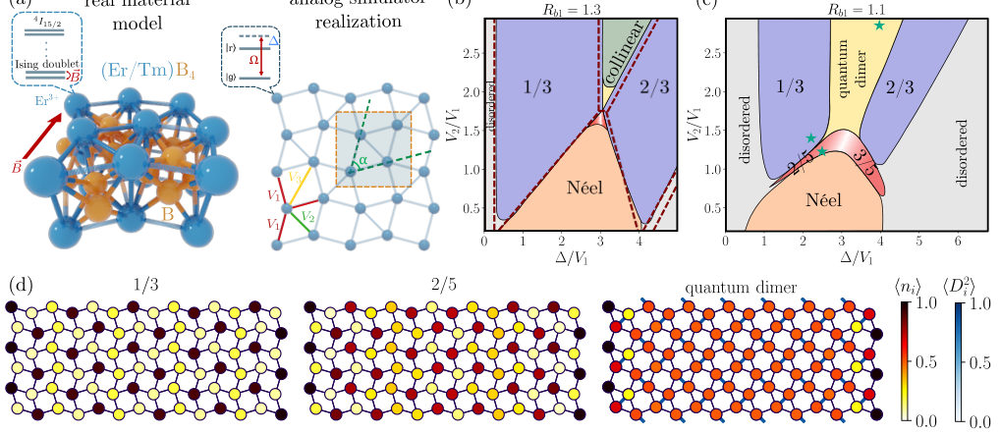
<figcaption class="paper-figure-caption"><b>Fig 1.</b> FIG. 1. Quantum Shastry-Sutherland model motivated by rare-earth tetraborides and its Rydberg phase diagram. (a) (left) Crystal structure of the rare-earth tetraboride family, which includes the Ising-like materials TmB4 and ErB4 [22]. The rare-earth ions form Shastry-Sutherland layers [10] and are surrounded by boron cages. In ErB4, the 4I15/2 multiplet is split by the crystal-field environment into Kramers doublets, with the lowest-energy doublet forming the effective Ising degree of freedom. Longitudinal and transverse magnetic fields couple anisotropically to this doublet, while interactions between the rare-earth moments generate effective in-plane Ising couplings. (right) The...</figcaption>
</figure>
<figure class="paper-figure-card">
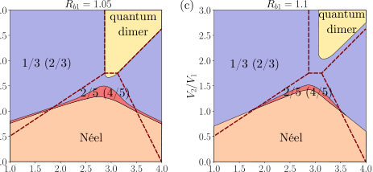
<figcaption class="paper-figure-caption"><b>Fig 2.</b> FIG. 2. Variational modeling of the transverse-field Shastry-Sutherland phase diagram. (a) The states identified numerically are modeled using minimal variational Ans¨atze. Single-site Ans¨atze are shown within the unit cell of each ordered state, with colors and arrow directions denoting the independent parameters θi. The quantum-dimer regime is described by an entangled two-site Ansatz that admixes the one-excitation dimer states with zero- and two-excitation configurations. (b)–(c) Phase diagrams obtained by vari- ationally minimizing the energy within the Ansatz spaces shown in (a) at two transverse-field strengths (see Methods, smaller Rb1 corresponds to a stronger transverse field)....</figcaption>
</figure>
<figure class="paper-figure-card">
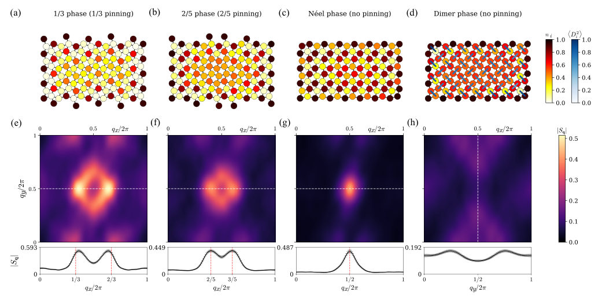
<figcaption class="paper-figure-caption"><b>Fig 3.</b> FIG. 3. Representative experimental signatures of phases in the quantum Shastry-Sutherland lattice. (a)– (d) Rydberg-density profiles, ⟨ni⟩, of states prepared using detuning sweeps on the Aquila analog quantum simulator (see Methods) [38]. Specifically, (a) shows the 1/3-filling ordered state prepared with 1/3-favoring boundary pinning, (b) shows the 2/5-filling ordered state prepared with 2/5-favoring boundary pinning, and (c) shows the N´eel state prepared without auxiliary pinning atoms, for which the native open boundary favors N´eel order. (d) shows experimental signatures at a parameter point associated with the quantum-dimer regime, also without auxiliary pinning atoms,...</figcaption>
</figure>
<figure class="paper-figure-card">
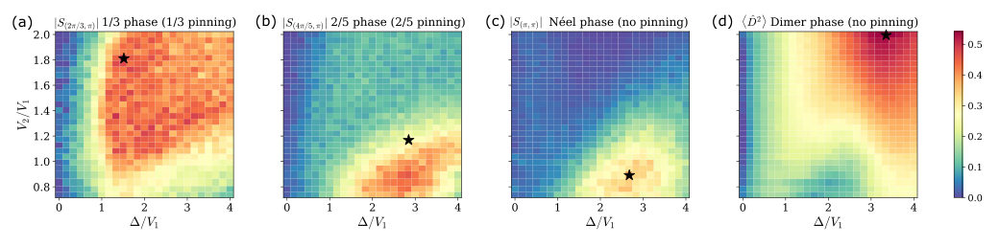
<figcaption class="paper-figure-caption"><b>Fig 4.</b> FIG. 4. Experimental order-parameter response maps of the Rydberg Shastry-Sutherland lattice. Experimentally measured structure-factor amplitudes, |Sq|, at the dominant ordering wavevectors for the density-ordered states and the average local dimer occupation, ⟨D2⟩= (1/N) P</figcaption>
</figure>
<figure class="paper-figure-card">
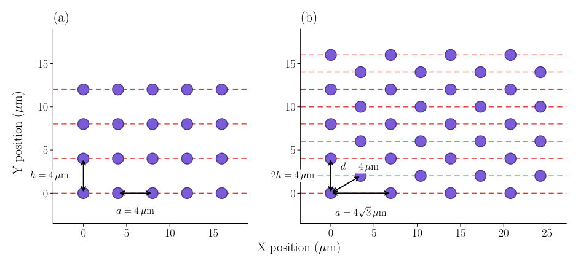
<figcaption class="paper-figure-caption"><b>Fig 5.</b> FIG. 5. Reservoir packing under the 4 µm optical-resolution limit. (a) Default square packing: rows and sites are both spaced by 4 µm. (b) Hexagonal packing at the configuration used here with alternate rows offset by a/2. The adjacent-row distance d and the skip-row vertical distance 2h both sit at 4 µm, giving a = 4 √</figcaption>
</figure>
</div>

<p><strong>Summary.</strong> This paper uses programmable Rydberg-atom arrays to simulate the quantum phase diagram of Ising magnets on the Shastry-Sutherland lattice, motivated by rare-earth materials. By combining DMRG calculations with experiments, the authors identify and confirm the existence of quantum-fluctuation-stabilized phases, such as 2/5 filling plateaus and quantum-dimer states. This establishes Rydberg arrays as a powerful tool for exploring frustrated quantum matter.</p>
<p><strong>Why it may be interesting.</strong> This work is highly relevant as it uses Rydberg arrays—a premier tool in AMO physics—to simulate complex, frustrated quantum Hamiltonians, directly bridging fundamental condensed matter theory with cutting-edge quantum simulation hardware.</p>
<details>
<summary>Detailed structure</summary>
<p><strong>Main problem.</strong> The study investigates how tunable quantum fluctuations reorganize the classically frustrated phase diagram of Ising-like magnets, motivated by rare-earth tetraborides.</p>
<p><strong>Main result.</strong> The work experimentally and theoretically identifies novel quantum-stabilized phases, including a 2/5 filling plateau and a symmetry-preserving quantum-dimer regime, beyond the classical predictions.</p>
<p><strong>Method.</strong> The research combines Density Matrix Renormalization Group (DMRG) calculations to map the phase diagram with experiments using programmable Rydberg-atom arrays to probe these quantum signatures.</p>
<p><strong>Model / system.</strong> The system is an Ising magnet on the Shastry-Sutherland lattice, modeled by an effective Hamiltonian realized using Rydberg atoms in optical-tweezer arrays. The platform allows independent control over geometry and external fields (transverse and longitudinal).</p>
<p><strong>Key observables.</strong> Order parameters such as structure factors (for 1/3, 2/5, Néel phases), local dimer occupation ($\langle D_i^2 
angle$), and dimer-dimer correlators ($C_{ij}$).</p>
<p><strong>Important parameters / regimes.</strong> Transverse field strength (controlled by Rabi frequency $\Omega$) and detuning ($\Delta$), which tune the system between classical and quantum regimes.</p>
<p><strong>Assumptions / limitations.</strong> The primary assumption is that the Rydberg array can accurately simulate the complex, material-motivated Hamiltonian, and that the measured response maps reflect the underlying quantum phase diagram.</p>
<p><strong>Figures summary.</strong> Figures illustrate the crystal structure and mapping to the spin model, the calculated phase diagram showing classical and quantum regimes, and experimental response maps comparing different boundary pinning conditions for various order parameters.</p>
<p><strong>Paper structure.</strong> The paper first establishes the physical motivation from rare-earth magnets, then details the mapping onto the Rydberg platform and the theoretical tools (DMRG). It proceeds to calculate and identify quantum regimes (2/5 plateau, quantum dimer) and concludes by presenting experimental measurements confirming these predicted signatures across varying boundary conditions.</p>
</details>
<details>
<summary>Abstract</summary>
<p>Frustrated magnets host rich emergent behavior because competing interactions generate dense manifolds of low-energy states. The Ising Shastry-Sutherland model is a paradigmatic setting, motivated experimentally by Ising-like rare-earth tetraborides such as TmB$_4$ and ErB$_4$, whose field-induced magnetization plateaus have motivated extensive microscopic modeling. Yet how tunable quantum fluctuations reorganize this material-motivated phase diagram remains largely unexplored. Here, we realize a transverse- and longitudinal-field Ising model on the Shastry-Sutherland lattice using a programmable Rydberg-atom array. We map its quantum phase diagram using density matrix renormalization group calculations and probe corresponding signatures experimentally in arrays containing more than 110 atoms. Beyond the established classical phases, the calculations identify two regimes absent in the classical limit and stabilized at finite transverse field: a $2/5$ filling plateau whose finite stability region emerges from a classically degenerate phase boundary and a symmetry-preserving quantum-dimer regime replacing classically selected collinear order. Experiments on finite open arrays reveal signatures consistent with these regimes across three boundary-pinning conditions, with the resulting response maps agreeing qualitatively with the calculated phase diagram. Our results establish programmable Rydberg-atom arrays as tools for exploring frustrated, material-motivated Hamiltonians and motivate searches for new, quantum-driven magnetization plateaus and quantum-dimer behavior in ErB$_4$ under a transverse field or in strain-tuned TmB$_4$.</p>
</details>
<p><sub><a href="#top">↑ back to top</a></sub></p>

<p><a id="paper-2610.13033"></a></p>
<h3 id="when-irrelevance-governs-dissipation-regression-scaling-in-open-quantum-criticality"><a href="http://arxiv.org/abs/2610.13033v1">When irrelevance governs: dissipation-regression scaling in open quantum criticality</a></h3>
<p><strong>Authors:</strong> Fan Zhong<br>
<strong>Type:</strong> theory · <strong>Category:</strong> statistical mechanics · <strong>PDF:</strong> <a href="https://arxiv.org/pdf/2610.13033v1">https://arxiv.org/pdf/2610.13033v1</a><br>
<strong>Analysis basis:</strong> full PDF text, analyzed in chunks
<strong>Topic relevance:</strong> 🔥 <code>Keldysh / 2PI / non-Gaussian methods</code> <strong>4/5</strong> · 🔥 <code>driven-dissipative phase transition</code> <strong>4/5</strong> · 🔥 <code>non-equilibrium universality</code> <strong>4/5</strong> · <code>correlated / nonlocal dissipation</code> <strong>3/5</strong> · <code>methods for driven-dissipative</code> <strong>3/5</strong> · <code>analog quantum simulation</code> <strong>2/5</strong> · <code>quantum measurements</code> <strong>1/5</strong></p>
<div class="figure-strip-hint">↔ Scroll figures horizontally</div>
<div class="paper-figures-scroll">
<figure class="paper-figure-card">
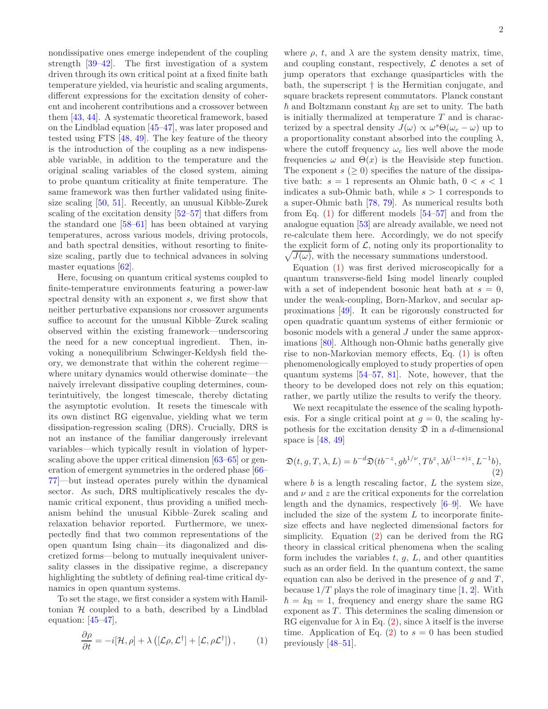
<figcaption class="paper-figure-caption"><b>Fig 1.</b> Low-resolution page preview, page 2</figcaption>
</figure>
<figure class="paper-figure-card">
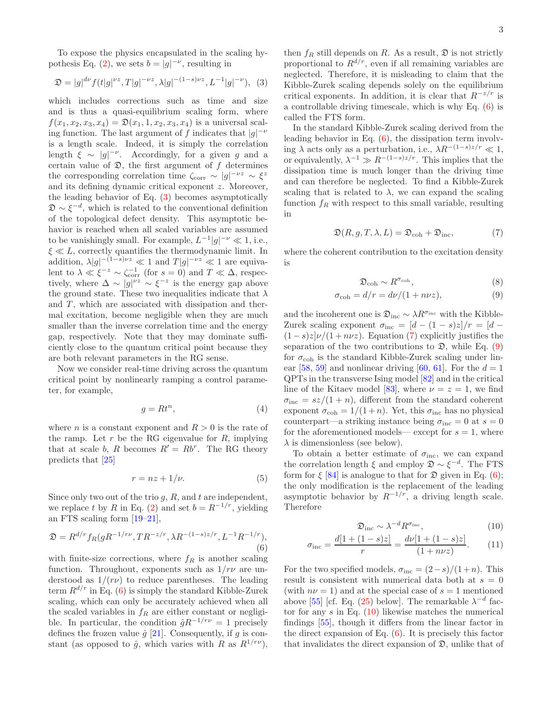
<figcaption class="paper-figure-caption"><b>Fig 2.</b> Low-resolution page preview, page 3</figcaption>
</figure>
<figure class="paper-figure-card">
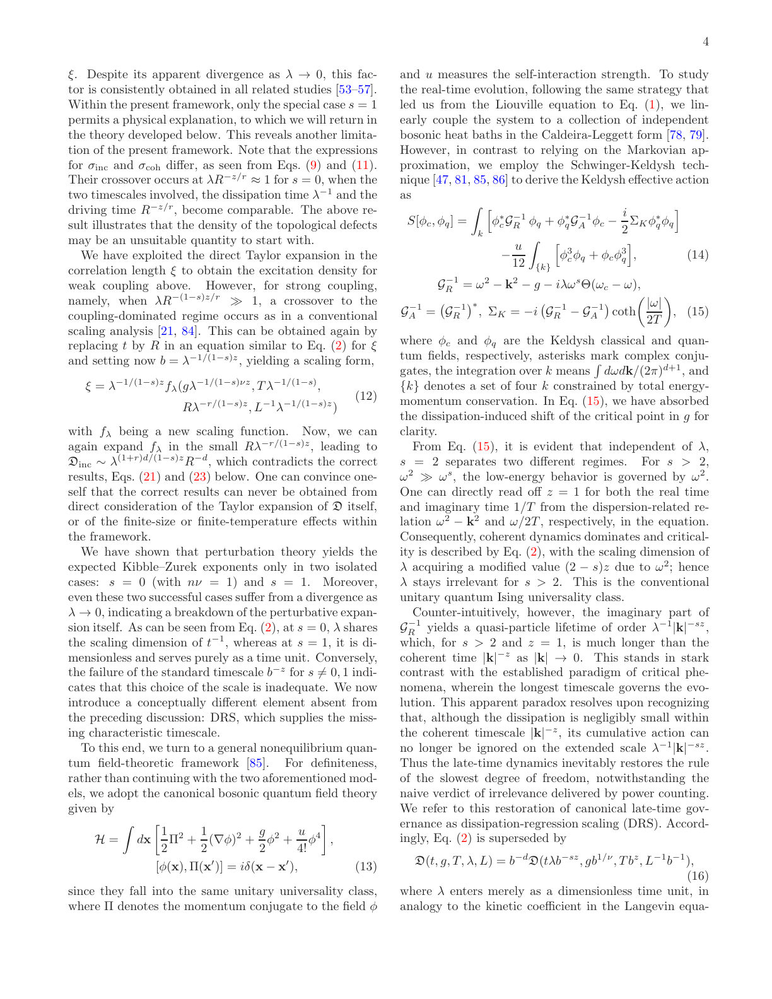
<figcaption class="paper-figure-caption"><b>Fig 3.</b> Low-resolution page preview, page 4</figcaption>
</figure>
<figure class="paper-figure-card">
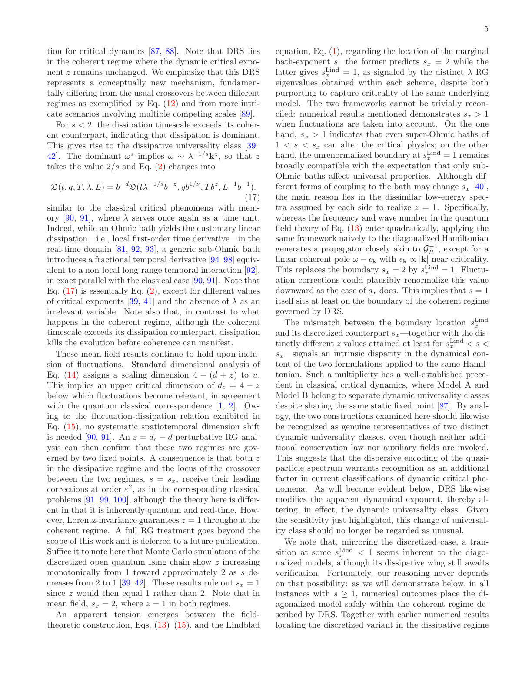
<figcaption class="paper-figure-caption"><b>Fig 4.</b> Low-resolution page preview, page 5</figcaption>
</figure>
<figure class="paper-figure-card">
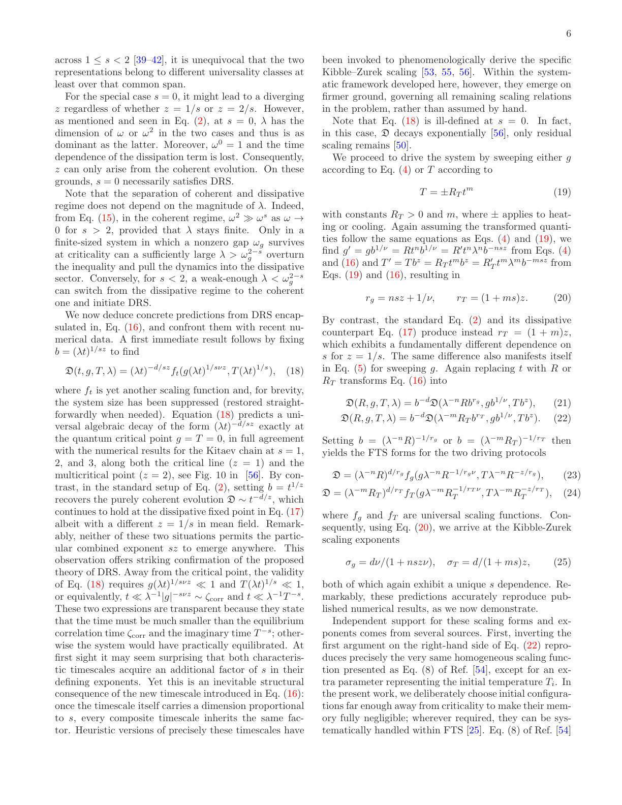
<figcaption class="paper-figure-caption"><b>Fig 5.</b> Low-resolution page preview, page 6</figcaption>
</figure>
</div>

<p><strong>Summary.</strong> This paper develops the Dissipation-Regression Scaling (DRS) framework to describe the real-time dynamics of quantum phase transitions in open quantum systems. Using advanced field theory techniques, the authors show that even couplings initially deemed irrelevant can dictate the system's longest timescale. This provides a unified explanation for unusual scaling behaviors observed in quantum criticality experiments and simulations.</p>
<p><strong>Why it may be interesting.</strong> This work provides a powerful, generalized scaling framework for non-equilibrium dynamics in open quantum systems, which is crucial for understanding decoherence and relaxation in realistic quantum devices.</p>
<details>
<summary>Detailed structure</summary>
<p><strong>Main problem.</strong> The paper investigates the real-time dynamics of quantum phase transitions in open quantum systems coupled to finite-temperature environments.</p>
<p><strong>Main result.</strong> It introduces Dissipation-Regression Scaling (DRS), a novel scaling law that counterintuitively shows that a naively irrelevant dissipative coupling determines the longest timescale in the coherence-dominated regime.</p>
<p><strong>Method.</strong> The analysis employs the Schwinger-Keldysh formalism and Renormalization-Group (RG) theory, extending standard scaling hypotheses to account for dissipation effects.</p>
<p><strong>Model / system.</strong> The study focuses on open quantum systems, exemplified by the open quantum Ising chain, whose dynamics are governed by the Lindblad equation and analyzed using a bosonic quantum field theory approach.</p>
<p><strong>Key observables.</strong> Excitation density (D) and topological defect density (related to Kibble-Zurek scaling).</p>
<p><strong>Important parameters / regimes.</strong> Bath spectral exponent (s), coupling strength ($\lambda$), temperature (T), and the dynamic critical exponent (z).</p>
<p><strong>Assumptions / limitations.</strong> The theory distinguishes between coherence-dominated and dissipation-dominated regimes, and it notes that standard perturbation theory and simple scaling arguments are insufficient.</p>
<p><strong>Figures summary.</strong> Not specified (The notes detail scaling equations and functional forms rather than describing figure content).</p>
<p><strong>Paper structure.</strong> The paper builds from the general problem of QPT dynamics in open systems, develops the Schwinger-Keldysh framework, derives scaling forms for different regimes (quasi-equilibrium vs. FTS), and culminates in the proposal and validation of the DRS mechanism.</p>
</details>
<details>
<summary>Abstract</summary>
<p>The real-time dynamics of quantum phase transitions in open systems coupled to finite-temperature environments sits at the heart of contemporary condensed-matter and quantum-information science. Here, invoking a Schwinger-Keldysh formalism, we uncover that, within the coherence-dominated regime of critical real-time evolution, a dissipative coupling deemed naively irrelevant determines, counterintuitively, the longest timescale that holds sway. Possessing a well-defined temporal scaling dimension, it engenders a novel dissipation-regression scaling that systematically reproduces the unusual Kibble-Zurek scaling and relaxation observed in recent numerical studies. By contrast, dissipation-dominated dynamics behaves qualitatively differently. There, furthermore, we show that the discretized and diagonalized formulations of the same open quantum Ising chain realize distinct universality classes.</p>
</details>
<p><sub><a href="#top">↑ back to top</a></sub></p>

<p><a id="paper-2610.12546"></a></p>
<h3 id="exact-solutions-of-non-markovian-dissipative-ising-models"><a href="http://arxiv.org/abs/2610.12546v1">Exact solutions of non-Markovian dissipative Ising models</a></h3>
<p><strong>Authors:</strong> Mohammad Maghrebi<br>
<strong>Type:</strong> theory · <strong>Category:</strong> other · <strong>PDF:</strong> <a href="https://arxiv.org/pdf/2610.12546v1">https://arxiv.org/pdf/2610.12546v1</a><br>
<strong>Analysis basis:</strong> full PDF text, analyzed in chunks
<strong>Topic relevance:</strong> 🔥 <code>methods for driven-dissipative</code> <strong>4/5</strong> · <code>analog quantum simulation</code> <strong>3/5</strong> · <code>correlated / nonlocal dissipation</code> <strong>3/5</strong> · <code>driven-dissipative phase transition</code> <strong>3/5</strong> · <code>Keldysh / 2PI / non-Gaussian methods</code> <strong>2/5</strong> · <code>non-equilibrium universality</code> <strong>2/5</strong> · <code>quantum measurements</code> <strong>2/5</strong> · <code>Tavis-Cummings &amp; cavity-many-emitter</code> <strong>1/5</strong></p>
<div class="figure-strip-hint">↔ Scroll figures horizontally</div>
<div class="paper-figures-scroll">
<figure class="paper-figure-card">
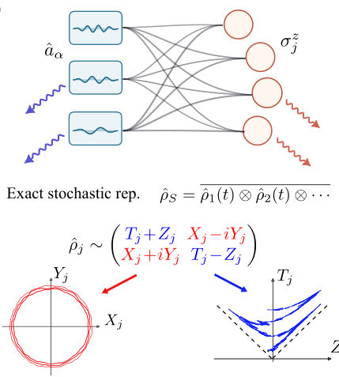
<figcaption class="paper-figure-caption"><b>Fig 1.</b> FIG. 1. Schematic model and exact stochastic solution. (a) Spins coupled to lossy bosonic modes and subject to local spin dissipation. The bosons mediate Ising-type interactions and give rise to non-Markovian dynamics. (b) The reduced den- sity matrix of the spins is obtained by averaging the product of individual stochastic density matrices which are generally nei- ther trace-1 nor positive. Without a transverse field or local spin dissipation, their matrix elements form two closed, ex- actly solvable pairs: their transverse components (Xj, Yj) un- dergo stochastic rotations, while the evolution of the diagonal components (Tj, Zj) resembles stochastic Lorentz boosts, as shown...</figcaption>
</figure>
<figure class="paper-figure-card">
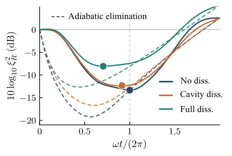
<figcaption class="paper-figure-caption"><b>Fig 2.</b> FIG. 2. Spin squeezing with non-Markovian dynamics and Markovian dissipation. Exact (solid) and adiabatically elim- inated (dashed) dynamics of the Wineland parameter are shown for N = 1000 spins uniformly coupled to a single bosonic mode with g/ω = 1.8. Different curves represent no dissipation (blue), cavity loss only (orange), and cavity loss together with local spin dephasing, emission, and pumping (green). Local spin dissipation shifts the optimal squeezing (marked by solid circles) earlier and reduces the achievable squeezing. Spins initially point along +x and the bosonic mode is in its vacuum state. Dissipation parameters are κ/ω = 0.05 and Γϕ/ω = 0.01, Γ↓= Γ↑= Γϕ/2, compara- ble to...</figcaption>
</figure>
</div>

<p><strong>Summary.</strong> This paper presents an exact stochastic method to solve the dynamics of dissipative Ising models coupled to bosonic environments. It successfully handles the interplay between non-Markovian bath effects and local spin dissipation without resorting to approximations like adiabatic elimination. The results are vital for accurately characterizing quantum devices where environmental noise is complex.</p>
<p><strong>Why it may be interesting.</strong> This work provides rigorous, non-perturbative tools to analyze open quantum systems, which is crucial for designing and understanding quantum devices where environmental coupling is complex and non-Markovian.</p>
<details>
<summary>Detailed structure</summary>
<p><strong>Main problem.</strong> Characterizing the dynamics of open quantum systems, especially interacting many-body systems, when environmental noise induces non-Markovian effects alongside standard Markovian dissipation.</p>
<p><strong>Main result.</strong> The authors developed an exact stochastic representation to solve the dynamics, showing that the full non-Markovian evolution significantly deviates from predictions based on adiabatic elimination.</p>
<p><strong>Method.</strong> The core method involves using an exact stochastic representation to decouple the many-body dynamics into individual spin evolutions, avoiding the approximation of adiabatically eliminating the bosonic bath modes.</p>
<p><strong>Model / system.</strong> The model consists of Ising spins coupled to lossy bosonic modes mediating Ising-type interactions. The dynamics are governed by a quantum master equation incorporating bosonic loss and local spin dissipation (dephasing, relaxation).</p>
<p><strong>Key observables.</strong> Spin observables, spin correlations, and the Spin Squeezing parameter ($\xi_R^2$).</p>
<p><strong>Important parameters / regimes.</strong> The interplay between non-Markovian dynamics (captured by the Green's function $G(t)$) and Markovian dissipation rates ($\kappa, \Gamma'$).</p>
<p><strong>Assumptions / limitations.</strong> The stochastic approach is exact, but obtaining closed-form solutions for all correlation functions remains challenging, necessitating numerical solutions for complex regimes.</p>
<p><strong>Figures summary.</strong> Figure 2 compares the exact dynamics (solid line) against the adiabatically eliminated dynamics (dashed line) for the Wineland parameter under various dissipation conditions.</p>
<p><strong>Paper structure.</strong> The paper first introduces the general master equation, then details the exact stochastic representation for solving spin dynamics. It analyzes specific observables like spin squeezing, compares exact results to the adiabatic limit, and derives time-local equations for correlation functions.</p>
</details>
<details>
<summary>Abstract</summary>
<p>Applications of quantum devices and simulators require an accurate understanding of their dynamics as well as the effects of environmental noise. While some sources of noise can be modeled as Markovian dissipation, coupling to resonators or vibrational modes often produces non-Markovian dynamics as well, making it difficult to characterize the system, particularly for interacting many-body systems. Here, we identify a broad class of exactly solvable many-body quantum systems with both non-Markovian dynamics and Markovian dissipation. We consider a prototypical model of spins coupled to lossy bosonic modes that mediate Ising-type interactions. We exclude a transverse field but allow local spin dissipation that need not commute with the interactions, including dephasing, relaxation, pumping, and even processes that generate coherences. Using an exact stochastic representation, we decouple the many-body dynamics into the evolution of individual spins, yielding exact spin observables and correlations without adiabatically eliminating the bosons. In the Markovian limit, our solutions describe Ising models with correlated dephasing and nonreciprocal interactions. An example of spin squeezing shows that both the achievable squeezing and its optimal preparation time depend strongly on the interplay between non-Markovian dynamics and Markovian dissipation.</p>
</details>
<p><sub><a href="#top">↑ back to top</a></sub></p>

<p><a id="paper-2610.12647"></a></p>
<h3 id="latent-symmetry-in-quantum-zeno-dynamics"><a href="http://arxiv.org/abs/2610.12647v1">Latent Symmetry in Quantum Zeno Dynamics</a></h3>
<p><strong>Authors:</strong> Stefano Longhi<br>
<strong>Type:</strong> theory · <strong>Category:</strong> other · <strong>PDF:</strong> <a href="https://arxiv.org/pdf/2610.12647v1">https://arxiv.org/pdf/2610.12647v1</a><br>
<strong>Analysis basis:</strong> full PDF text, analyzed in chunks
<strong>Topic relevance:</strong> 🔥 <code>quantum measurements</code> <strong>4/5</strong> · <code>analog quantum simulation</code> <strong>3/5</strong> · <code>correlated / nonlocal dissipation</code> <strong>3/5</strong> · <code>driven-dissipative phase transition</code> <strong>3/5</strong> · <code>methods for driven-dissipative</code> <strong>3/5</strong> · <code>non-equilibrium universality</code> <strong>2/5</strong> · <code>Keldysh / 2PI / non-Gaussian methods</code> <strong>1/5</strong> · <code>Tavis-Cummings &amp; cavity-many-emitter</code> <strong>1/5</strong></p>
<div class="figure-strip-hint">↔ Scroll figures horizontally</div>
<div class="paper-figures-scroll">
<figure class="paper-figure-card">
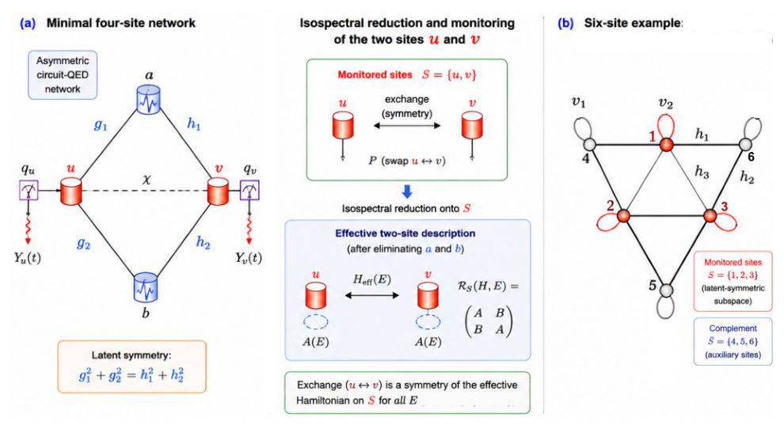
<figcaption class="paper-figure-caption"><b>Fig 1.</b> FIG. 1. Latent symmetry and monitored-network models. (a) Minimal four-resonator circuit-QED network considered in the main text. Two monitored resonators u and v are coupled through the auxiliary resonators a and b with generally different coupling patterns (g1, g2) and (h1, h2). The condition g2 1 + g2 2 = h2 1 + h2 2 produces an exact latent exchange symmetry between u and v, despite the absence of a corresponding geometrical symmetry of the physical network. Continuous QND monitoring of the occupations of u and v yields the measurement records Yu(t) and Yv(t). Center: isospectral reduction onto the monitored subspace S = {u, v} eliminates the auxiliary sites and yields an effective...</figcaption>
</figure>
<figure class="paper-figure-card">
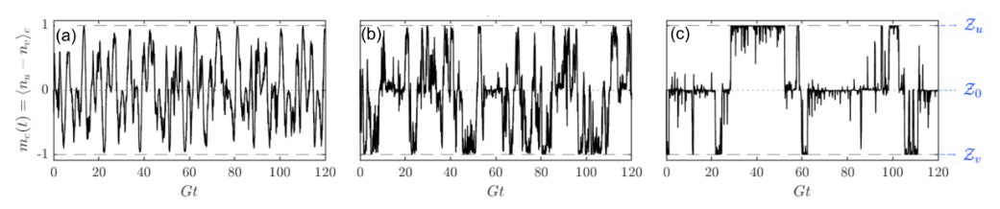
<figcaption class="paper-figure-caption"><b>Fig 2.</b> FIG. 2. Emergence of quantum-Zeno subspaces in individual continuously monitored trajectories. Conditional latent polar- ization mc(t) = ⟨nu −nv⟩c for (a) γ/G = 0.5, (b) γ/G = 3, and (c) γ/G = 15. The coupling vectors are parametrized according to Eq. (8) with α = 10◦and β = 55◦, and the resonators are taken at resonance, ∆= ϵ0. The initial state is the latent-even state |ψc(0)⟩= (|u⟩+|v⟩)/ √</figcaption>
</figure>
<figure class="paper-figure-card">
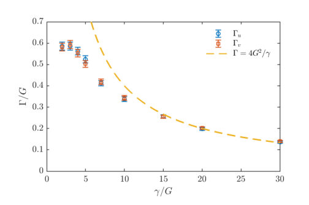
<figcaption class="paper-figure-caption"><b>Fig 3.</b> FIG. 3. Latent-symmetry-constrained Zeno escape rates. Numerically extracted escape rates Γu and Γv from the po- larized sectors Zu and Zv as a function of the monitoring strength γ/G. For each value of γ, the two rates are indepen- dently estimated from 103 first-passage trajectories initialized in |u⟩and |v⟩, respectively. First passage to either of the other Zeno sectors is identified using the localization thresh- old pth = 0.9, with right-censored trajectories included in the rate estimator. The coupling vectors are parametrized accord- ing to Eq. (8) with α = 10◦, β = 55◦, and ∆= ϵ0. Numerical integration uses G dt = 2 × 10−4 and a maximum observation time GTmax = 60. The...</figcaption>
</figure>
<figure class="paper-figure-card">
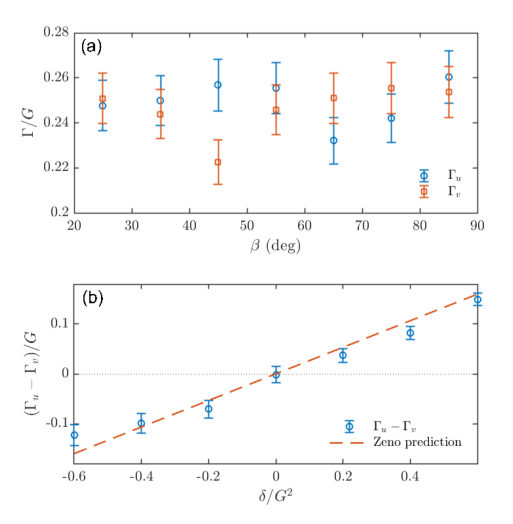
<figcaption class="paper-figure-caption"><b>Fig 4.</b> FIG. 4. Control of Zeno escape dynamics by latent symme- try. (a) Escape rates Γu and Γv under deformation of the mi- croscopic coupling geometry along the latent-symmetric man- ifold. The angle α = 10◦is fixed while β is varied from 25◦to 85◦in steps of 10◦, with ∥g∥= ∥h∥= G maintained through- out. Despite the resulting geometrical inequivalence of the local coupling environments, the two independently extracted rates remain equal within statistical uncertainty. (b) Escape- rate splitting upon breaking the latent symmetry. The cou- pling directions are fixed at α = 10◦and β = 55◦, while the norm of g is kept fixed, ∥g∥= G, and that of h is varied according to ∥h∥= rG. Consequently, δ/G2 =...</figcaption>
</figure>
</div>

<p><strong>Summary.</strong> This paper demonstrates that a hidden or 'latent' symmetry can dictate the dynamics of a quantum system undergoing continuous measurement, even if the physical hardware does not possess that symmetry. Using a circuit-QED model, the authors show this symmetry forces geometrically distinct measurement-selected subspaces to exhibit identical statistical properties, revealing a deep underlying organizing principle in quantum Zeno dynamics.</p>
<p><strong>Why it may be interesting.</strong> This work is highly relevant as it connects abstract symmetry principles (latent symmetry) to concrete, measurable phenomena in open quantum systems (QZE), providing a powerful tool to predict robust behavior in engineered quantum devices like circuit QED.</p>
<details>
<summary>Detailed structure</summary>
<p><strong>Main problem.</strong> The paper investigates whether a latent symmetry can govern the structure and dynamics of quantum-Zeno subspaces, even when the underlying physical network geometry lacks such a symmetry.</p>
<p><strong>Main result.</strong> Latent symmetry acts as a hidden organizing principle, enforcing exact, measurable relations (like identical escape rates) between quantum-Zeno subspaces that are otherwise geometrically inequivalent.</p>
<p><strong>Method.</strong> The analysis uses exact isospectral reduction of the Hamiltonian onto the monitored subspace, followed by analyzing the resulting dynamics using the Lindblad master equation and stochastic master equations.</p>
<p><strong>Model / system.</strong> The model is a minimal circuit-QED network of coupled microwave resonators (four resonators in the minimal case). Dynamics are governed by continuous Quantum-Nondemolition (QND) monitoring of local photon occupations.</p>
<p><strong>Key observables.</strong> Escape rates ($\Gamma_u, \Gamma_v$), conditional latent polarization ($m_c(t)$), and the ensemble imbalance ($\langle \hat{n}_u - \hat{n}_v 
angle_{ens}$).</p>
<p><strong>Important parameters / regimes.</strong> Measurement strength ($\gamma$), coupling strengths ($g, h$), and the ratio of measurement strengths ($\gamma_u / \gamma_v$).</p>
<p><strong>Assumptions / limitations.</strong> The analysis assumes the dispersive coupling regime for readout ancillas and requires equal measurement strengths ($\gamma_u = \gamma_v$) to preserve the latent symmetry during monitoring.</p>
<p><strong>Figures summary.</strong> Figures illustrate the effective Hamiltonian invariant under $u \leftrightarrow v$ after isospectral reduction, and show that the equality of Zeno escape rates ($\Gamma_u = \Gamma_v$) persists when latent symmetry is maintained, while rate splitting occurs when the symmetry is broken.</p>
<p><strong>Paper structure.</strong> The paper progresses from defining the physical system and the concept of latent symmetry, to performing the isospectral reduction to find the effective Hamiltonian, and finally analyzing the dynamics (both unconditional and conditional) to demonstrate the symmetry's imprint on measurable quantities like escape rates.</p>
</details>
<details>
<summary>Abstract</summary>
<p>Quantum Zeno dynamics constrains a continuously monitored system to measurement-selected subspaces. Here we show that the structure of such Zeno subspaces can be governed by a \emph{latent symmetry}, namely a symmetry that is absent from the geometry of the underlying physical network. We consider a minimal circuit-QED network of coupled microwave resonators subject to quantum-nondemolition (QND) monitoring of local photon occupations. Two distinguished resonators are geometrically inequivalent, yet are exactly exchanged by a latent symmetry of the network. Strong monitoring partitions the single-excitation Hilbert space into three quantum-Zeno subspaces, two of which correspond to localization on the distinguished resonators. Latent symmetry exactly exchanges these two Zeno subspaces and enforces identical escape and residence statistics despite their different microscopic environments. In the strong-measurement regime their residence times grow linearly with the measurement strength and diverge in the ideal Zeno limit, where the measurement subspaces become dynamically disconnected. Our results show that latent symmetry can act as a hidden organizing principle of quantum Zeno dynamics, imposing exact relations between measurement-selected subspaces that are geometrically inequivalent in the physical system.</p>
</details>
<p><sub><a href="#top">↑ back to top</a></sub></p>

<p><a id="paper-2610.12607"></a></p>
<h3 id="dissipative-majorana-chain-anomalies-and-non-invertible-symmetries"><a href="http://arxiv.org/abs/2610.12607v1">Dissipative Majorana Chain---Anomalies and Non-Invertible Symmetries</a></h3>
<p><strong>Authors:</strong> Hung-Hsuan Teh, Tokiro Numasawa<br>
<strong>Type:</strong> theory · <strong>Category:</strong> statistical mechanics · <strong>PDF:</strong> <a href="https://arxiv.org/pdf/2610.12607v1">https://arxiv.org/pdf/2610.12607v1</a><br>
<strong>Analysis basis:</strong> full PDF text, analyzed in chunks
<strong>Topic relevance:</strong> 🔥 <code>methods for driven-dissipative</code> <strong>4/5</strong> · <code>correlated / nonlocal dissipation</code> <strong>3/5</strong> · <code>driven-dissipative phase transition</code> <strong>3/5</strong> · <code>non-equilibrium universality</code> <strong>3/5</strong> · <code>Keldysh / 2PI / non-Gaussian methods</code> <strong>2/5</strong> · <code>analog quantum simulation</code> <strong>2/5</strong> · <code>Frenkel-Kontorova</code> <strong>1/5</strong> · <code>quantum measurements</code> <strong>1/5</strong></p>
<div class="figure-strip-hint">↔ Scroll figures horizontally</div>
<div class="paper-figures-scroll">
<figure class="paper-figure-card">
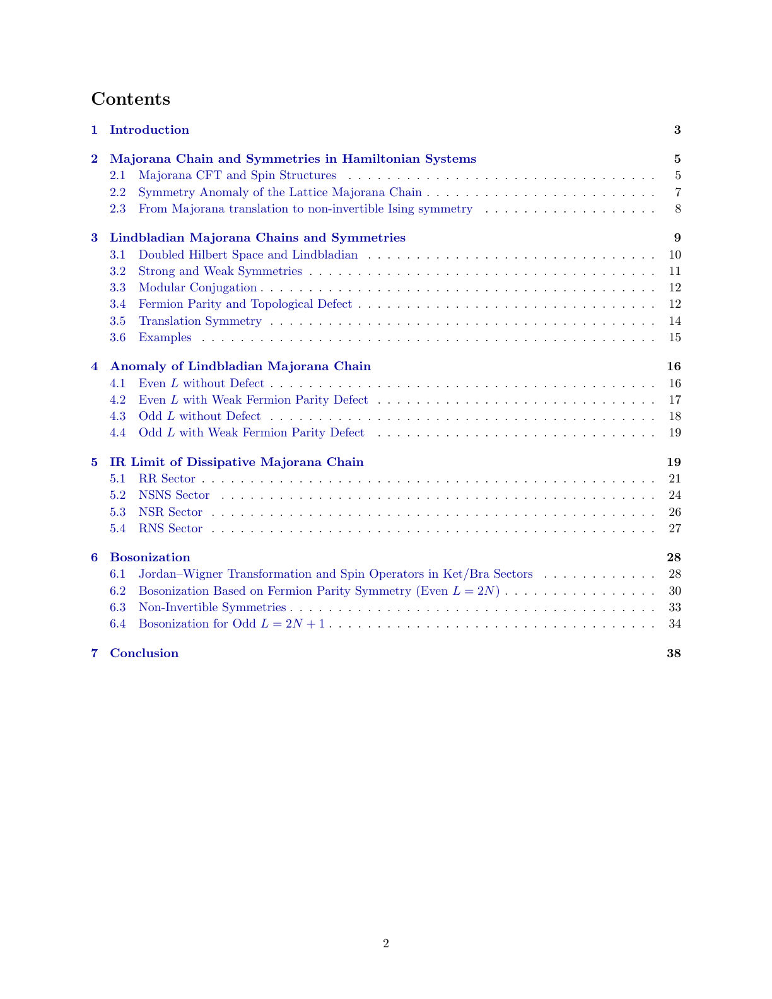
<figcaption class="paper-figure-caption"><b>Fig 1.</b> Low-resolution page preview, page 2</figcaption>
</figure>
<figure class="paper-figure-card">
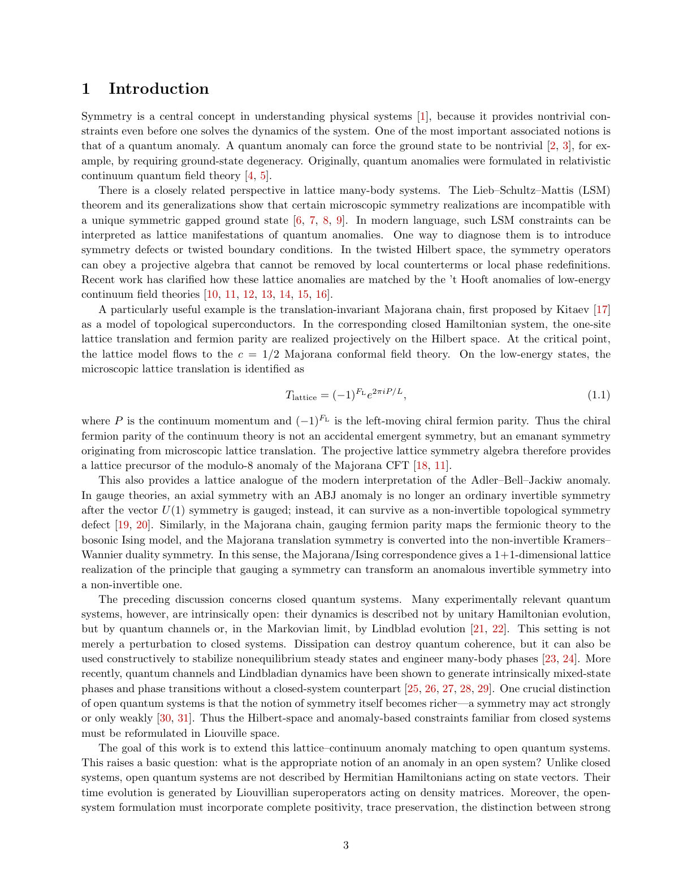
<figcaption class="paper-figure-caption"><b>Fig 2.</b> Low-resolution page preview, page 3</figcaption>
</figure>
<figure class="paper-figure-card">
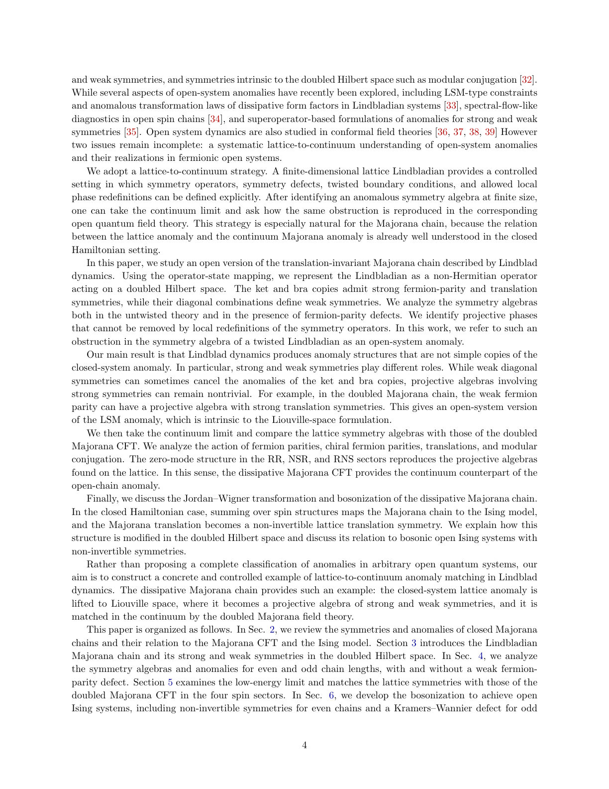
<figcaption class="paper-figure-caption"><b>Fig 3.</b> Low-resolution page preview, page 4</figcaption>
</figure>
<figure class="paper-figure-card">
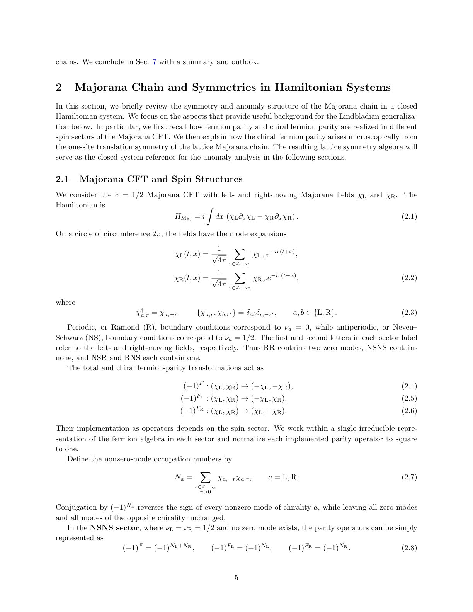
<figcaption class="paper-figure-caption"><b>Fig 4.</b> Low-resolution page preview, page 5</figcaption>
</figure>
<figure class="paper-figure-card">
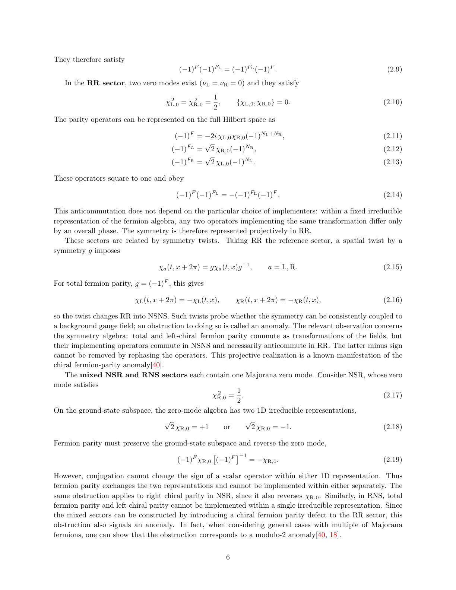
<figcaption class="paper-figure-caption"><b>Fig 5.</b> Low-resolution page preview, page 6</figcaption>
</figure>
</div>

<p><strong>Summary.</strong> This paper investigates the symmetries and anomalies of Majorana chains undergoing dissipation, moving beyond standard unitary models. By mapping the dynamics to a doubled Hilbert space, the authors derive that the open system exhibits specific non-invertible symmetries, such as Kramers–Wannier duality, depending on the chain's parity. This provides a rigorous theoretical tool for analyzing constraints in open quantum many-body systems.</p>
<p><strong>Why it may be interesting.</strong> This work provides a controlled framework for understanding how fundamental concepts like anomalies and non-invertible symmetries manifest when moving from unitary (closed) to dissipative (open) quantum evolution, which is crucial for realistic quantum simulations.</p>
<details>
<summary>Detailed structure</summary>
<p><strong>Main problem.</strong> The paper aims to extend the concept of quantum anomalies and symmetry constraints from closed quantum systems to open quantum systems governed by dissipation.</p>
<p><strong>Main result.</strong> The study establishes that dissipative Majorana chains yield Ising Lindbladians exhibiting non-invertible Kramers–Wannier symmetries for even lengths, and a duality defect for odd lengths.</p>
<p><strong>Method.</strong> The authors use the operator-state mapping to represent the Lindbladian as a non-Hermitian operator on a doubled Hilbert space, analyzing symmetry algebras and performing lattice bosonization.</p>
<p><strong>Model / system.</strong> The system is the dissipative Majorana chain, whose dynamics are described by Lindblad dynamics. The analysis involves mapping the system to a doubled Hilbert space and relating the lattice structure to the doubled Majorana CFT.</p>
<p><strong>Key observables.</strong> Strong and weak fermion parities, lattice symmetry algebras, and the resulting Ising Lindbladian structure.</p>
<p><strong>Important parameters / regimes.</strong> Even and odd chain lengths ($L$), and the presence of collective energy dephasing.</p>
<p><strong>Assumptions / limitations.</strong> The standard notion of symmetry must be reformulated in Liouville space due to dissipation, and the analysis relies on specific boundary conditions for the CFT correspondence.</p>
<p><strong>Paper structure.</strong> The paper progresses by first reviewing closed Majorana chains, then introducing the Lindbladian chain, analyzing symmetries for even/odd lengths, matching lattice symmetries to the doubled Majorana CFT, and finally developing the lattice bosonization to open Ising systems.</p>
</details>
<details>
<summary>Abstract</summary>
<p>We study symmetries and anomalies of dissipative Majorana chains described by Lindblad dynamics. Using the operator-state mapping, we represent the Lindbladian as a non-Hermitian operator on a doubled Hilbert space. In this formulation, the ket and bra contours admit strong fermion parities and strong translations, while their diagonal combinations define weak symmetries. For even and odd chain lengths, we diagnose anomalies by comparing symmetry algebras with and without weak fermion-parity defects. These algebras retain the lattice precursor of the modulo-$8$ anomaly of the closed Majorana chain and exhibit projective relations between strong fermion parity and weak translation, as well as between weak fermion parity and strong translation, which are intrinsic to open quantum systems. We establish the IR correspondence between the lattice symmetry algebras and those of the doubled Majorana CFT in four spin sectors, identifying chiral fermion parities emanated from the lattice translations. Finally, we develop the lattice bosonization of the dissipative chain. For even length with collective energy dephasing, combining the defect and no-defect sectors and imposing GSO projections gives rise to an Ising Lindbladian with non-invertible Kramers--Wannier symmetries descending from the anomalous strong translation and fermion parity of the Majorana chain. For odd length, constructing mutually commuting ket- and bra-sector spin operators instead yields an Ising Lindbladian with a Kramers--Wannier duality defect. Our results provide a controlled framework for extending lattice anomalies and non-invertible symmetries to open quantum systems.</p>
</details>
<p><sub><a href="#top">↑ back to top</a></sub></p>

<p><a id="paper-2610.13784"></a></p>
<h3 id="locality-preparation-time-tradeoffs-in-dissipative-quantum-systems"><a href="http://arxiv.org/abs/2610.13784v1">Locality-Preparation Time Tradeoffs in Dissipative Quantum Systems</a></h3>
<p><strong>Authors:</strong> Philipp Westhoff, Sara Murciano, Mattia Moroder<br>
<strong>Type:</strong> theory · <strong>Category:</strong> statistical mechanics · <strong>PDF:</strong> <a href="https://arxiv.org/pdf/2610.13784v1">https://arxiv.org/pdf/2610.13784v1</a><br>
<strong>Analysis basis:</strong> full PDF text, analyzed in chunks
<strong>Topic relevance:</strong> 🔥 <code>correlated / nonlocal dissipation</code> <strong>4/5</strong> · <code>analog quantum simulation</code> <strong>3/5</strong> · <code>driven-dissipative phase transition</code> <strong>3/5</strong> · <code>methods for driven-dissipative</code> <strong>3/5</strong> · <code>non-equilibrium universality</code> <strong>3/5</strong> · <code>quantum measurements</code> <strong>2/5</strong> · <code>Keldysh / 2PI / non-Gaussian methods</code> <strong>1/5</strong></p>
<div class="figure-strip-hint">↔ Scroll figures horizontally</div>
<div class="paper-figures-scroll">
<figure class="paper-figure-card">
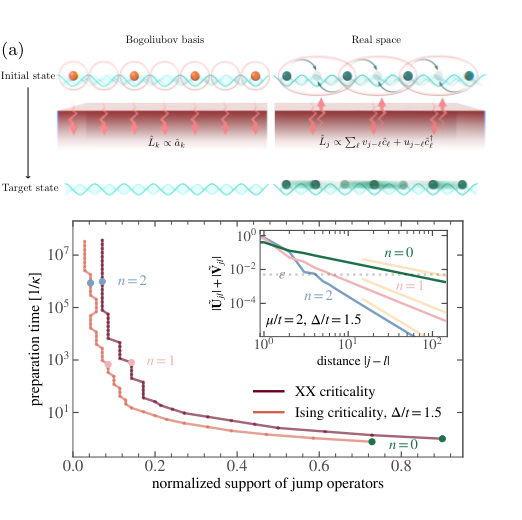
<figcaption class="paper-figure-caption"><b>Fig 1.</b> FIG. 1. Locality-preparation time tradeoff. (a) Schematic of dissipative ground-state preparation. In the Bo- goliubov basis (left), the target ground state is simply the quasiparticle vacuum, whereas in real space (right) it has a nontrivial structure. In the main text, we show how the jump operators can be optimized to maximize their real-space local- ity while preserving the target steady state. (b) Preparation time, expressed in units of κ−1, as a function of the normal- ized support of the jump operators at XX and Ising criticality (see Fig. 2). Highlighted points correspond to integer values of the suppression exponent n. The inset shows the correspond- ing real-space decay of the...</figcaption>
</figure>
<figure class="paper-figure-card">
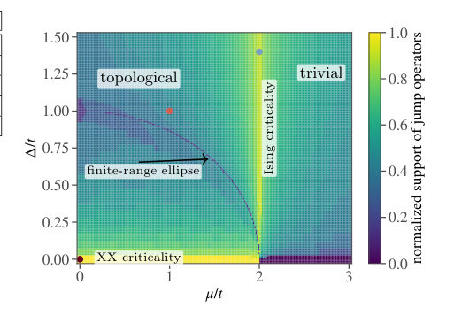
<figcaption class="paper-figure-caption"><b>Fig 2.</b> FIG. 2. Locality of the dissipator at fixed prepara- tion time across the Kitaev phase diagram. Support of the jump operators required to prepare the ground state at fixed dissipative gap 2∆L/κ = 1, as a function of the chem- ical potential µ/t and pairing strength ∆/t. The support is determined from the spatial extent of the real-space jump- operator coefficients above a cutoff ϵ = 0.005 for a system with N = 100 sites.</figcaption>
</figure>
<figure class="paper-figure-card">
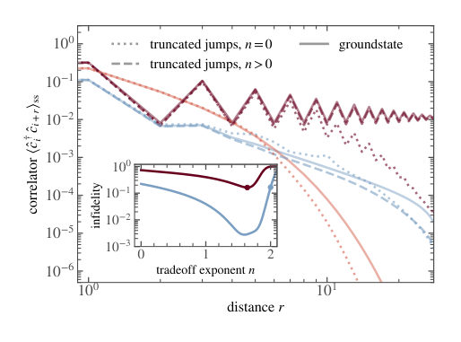
<figcaption class="paper-figure-caption"><b>Fig 3.</b> FIG. 3. Accuracy of finite-range dissipators. Steady- state correlator |⟨ˆc† i ˆci+r⟩ss| obtained after truncating the jump operators, compared with the exact ground-state result (solid lines). Dotted lines correspond to direct truncation of the real-space Bogoliubov annihilators, i.e., the trivial mixing βk = 1 (n = 0). Dashed lines instead exploit a nontrivial mixing βk (n &gt; 0) to suppress the momentum-space discon- tinuities and improve the spatial decay of the jump operators before applying the same finite-range truncation. The inset shows the steady-state infidelity 1 −FHS, where FHS is the normalized Hilbert-Schmidt overlap, as a function of the sup- pression exponent n for the two...</figcaption>
</figure>
<figure class="paper-figure-card">
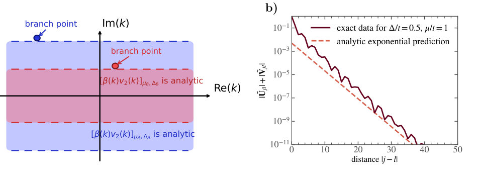
<figcaption class="paper-figure-caption"><b>Fig 4.</b> FIG. 1. Localization of the jump operators in the topological phase. Left: Schematic analytic continuation to the complex momentum plane. For a given set of Hamiltonian parameters, the localization length ξ is determined by the singularity closest to the real axis: the corresponding branch point bounds the strip of analyticity and lies at an imaginary distance 1/ξ from the real axis. Right: Real-space jump-operator coefficients | ˜Ujl| + | ˜Vjl|, comparing the exact numerical Fourier coefficients with the asymptotic exponential decay rate derived in Eq. (D31) in the topological phase. The agreement confirms the exponential decay governed by ξ.</figcaption>
</figure>
<figure class="paper-figure-card">
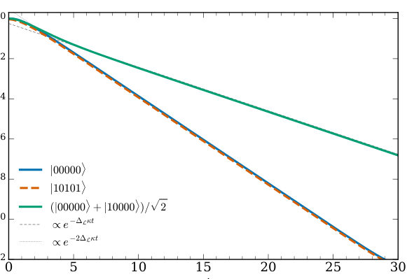
<figcaption class="paper-figure-caption"><b>Fig 5.</b> FIG. 2. Parity-controlled relaxation and Mpemba-type acceleration. Trace distance D(ˆρ(t), ˆρgs) from the target steady state for a Kitaev chain with N = 5, t = 1, ∆= 0, and µ = 1. The full Lindblad dynamics, including the Kitaev Hamiltonian and Bogoliubov jump operators ˆLk = √κ ˆak, is solved by exact diagonalization of the Lindbladian. The definite- parity states |00000⟩(blue) and |10101⟩(orange dashed) have no overlap with the slowest odd-parity coherence modes and asymptotically decay with rate 2∆L. The parity-coherent state (|00000⟩+|10000⟩)/ √</figcaption>
</figure>
</div>

<p><strong>Summary.</strong> This paper establishes a rigorous relationship between how locally the dissipation is engineered and how fast a quantum system can reach its steady state. Using the Kitaev chain model, the authors show that critical points impose a severe, system-size-dependent cost on preparation time, while gapped phases allow for fast, local preparation. This work is crucial for understanding the fundamental limits of dissipative quantum control.</p>
<p><strong>Why it may be interesting.</strong> This work provides quantitative, fundamental constraints on the feasibility of engineering quantum states using open system dynamics, directly impacting the design principles for quantum simulators and quantum control.</p>
<details>
<summary>Detailed structure</summary>
<p><strong>Main problem.</strong> The paper quantifies the fundamental tradeoff between the spatial locality of engineered dissipation and the required preparation time for driving a quantum system to a steady state.</p>
<p><strong>Main result.</strong> At critical points, achieving high locality forces the preparation time to grow algebraically with system size, whereas gapped phases allow for exponentially localized dissipation with a finite preparation time.</p>
<p><strong>Method.</strong> The authors establish an exact locality-preparation time relation for quadratic fermionic systems by analyzing the structure of jump operators derived from the Lindbladian dynamics.</p>
<p><strong>Model / system.</strong> The analysis is performed on quadratic fermionic systems, specifically exemplified by the one-dimensional Kitaev chain, which exhibits distinct critical and gapped phases.</p>
<p><strong>Key observables.</strong> Preparation time ($    au$), spatial decay of jump operator coefficients (locality), and steady-state fidelity.</p>
<p><strong>Important parameters / regimes.</strong> System size ($N$), Kitaev chain parameters ($\mu, t, \Delta$), and the exponent ($n$) controlling the suppression of jump operator tails.</p>
<p><strong>Assumptions / limitations.</strong> The approach is exact for quadratic fermionic systems, and the analysis relies on the analytic structure of Bogoliubov coefficients in momentum space.</p>
<p><strong>Figures summary.</strong> Figures illustrate the support of jump operators across the Kitaev phase diagram, showing extended support at criticality and localized support in gapped phases. Other figures compare steady-state correlators and fidelity under different truncation assumptions.</p>
<p><strong>Paper structure.</strong> The paper first introduces the problem of locality vs. time tradeoff, develops the exact relation for quadratic fermions, applies this framework to the Kitaev chain to distinguish scaling laws in critical vs. gapped regimes, and concludes by identifying the conditions for fast, local preparation.</p>
</details>
<details>
<summary>Abstract</summary>
<p>Dissipative state preparation engineers quantum many-body states as steady states of an open-system dynamics. The spatial range of the required dissipation sets both the feasibility of analog implementations and the connectivity and control complexity of digital ones. Yet how this locality quantitatively constrains preparation times remains largely unknown. Here, we establish an exact locality-preparation time relation for quadratic fermionic systems and develop a construction that optimizes the locality of the dissipative dynamics while preserving the target state. Applied to the Kitaev chain, our framework reveals sharply different locality-preparation time tradeoffs in critical and gapped regimes. At criticality, suppressing the algebraic tails of the jump operators necessarily forces the preparation time to grow algebraically with system size. By contrast, both trivial and topological gapped phases admit exponentially localized dissipation with a finite preparation time in the thermodynamic limit. Our results identify when fast dissipative preparation is compatible with local control and when criticality imposes an unavoidable dynamical cost.</p>
</details>
<p><sub><a href="#top">↑ back to top</a></sub></p>

<p><a id="paper-2610.12555"></a></p>
<h3 id="flat-band-quantum-geometry-from-embedded-quench-dynamics"><a href="http://arxiv.org/abs/2610.12555v1">Flat-band quantum geometry from embedded quench dynamics</a></h3>
<p><strong>Authors:</strong> Ilia Komissarov, Daniel E. Sheehy, Ahana Chakraborty<br>
<strong>Type:</strong> theory · <strong>Category:</strong> other · <strong>PDF:</strong> <a href="https://arxiv.org/pdf/2610.12555v1">https://arxiv.org/pdf/2610.12555v1</a><br>
<strong>Analysis basis:</strong> full PDF text, analyzed in chunks
<strong>Topic relevance:</strong> 🔥 <code>analog quantum simulation</code> <strong>4/5</strong> · <code>methods for driven-dissipative</code> <strong>3/5</strong> · <code>non-equilibrium universality</code> <strong>3/5</strong> · <code>quantum measurements</code> <strong>3/5</strong> · <code>driven-dissipative phase transition</code> <strong>2/5</strong> · <code>scars &amp; prethermalization</code> <strong>2/5</strong> · <code>Keldysh / 2PI / non-Gaussian methods</code> <strong>1/5</strong></p>
<div class="figure-strip-hint">↔ Scroll figures horizontally</div>
<div class="paper-figures-scroll">
<figure class="paper-figure-card">
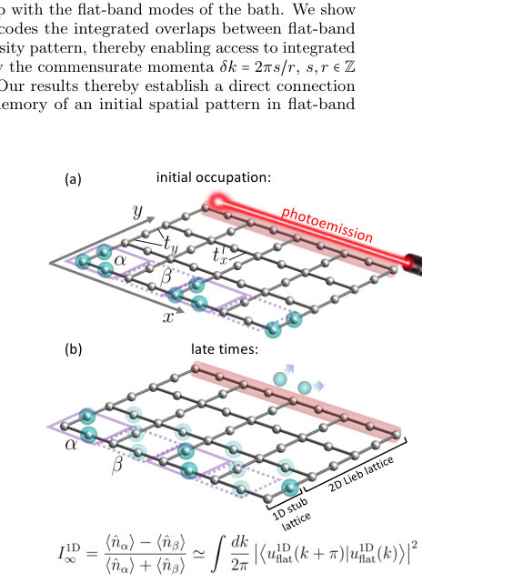
<figcaption class="paper-figure-caption"><b>Fig 1.</b> Figure 1. (a) We consider a two-dimensional Lieb lattice in which a single α bipartition of the one-dimensional subset of sites is locally populated by fermions or bosons, with a single particle per site, as indicated by the blue spheres. (b) At late times, dispersive particles spread to the driven edge, shown in red, where they are removed, which leads to a stationary density pattern in the vicinity of the initially populated edge. The resulting sublattice density imbalance, quantified between the α and β sectors of the one-dimensional stub lattice, is related to the quantum distance between the 1D flat-band states dflat k,k+π (3).</figcaption>
</figure>
<figure class="paper-figure-card">
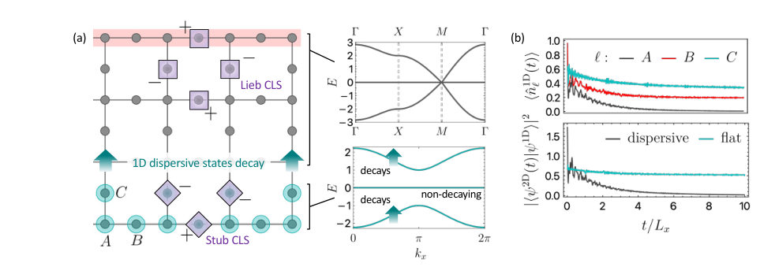
<figcaption class="paper-figure-caption"><b>Fig 2.</b> Figure 2. (a) Spectral filtering of dispersive states in a fully-filled 1D stub lattice coupled to an initially empty 2D Lieb lattice. As the system evolves, the particles, shown with blue circles, decay into the 2D, leaving a persistent localized pattern. This occurs because both the 1D system and the 2D bath host flat bands (see the band structures on the right). The subradiant nature of the 1D compact localized states (purple diamonds) originates from their finite overlap with the CLS of the 2D Lieb lattice (purple squares). (b) Time evolution of sublattice occupations ⟨ˆnℓ⟩(10) and of the overlap between the 2D wavefunction ψ and the 1D stub eigenstates. At late times, only ⟨ˆnB⟩and...</figcaption>
</figure>
<figure class="paper-figure-card">
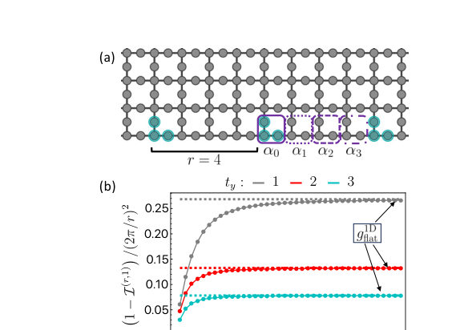
<figcaption class="paper-figure-caption"><b>Fig 3.</b> Figure 4. (a) Embedding setup used to probe the r-partite flat-band imbalance I(r,s) ∞ for a 1D stub lattice embedded into a 2D Lieb lattice: every r-th unit cell of the stub lattice is ini- tially occupied (illustrated for r = 4 with sublattices labeled as α0, α1, α2, α3). (b) The r-partite intrinsic imbalance for s = 1 (15), subtracted from unity and normalized by the squared mo- mentum displacement (2π/r)2, is shown with markers (solid lines serve as visual guides). As a function of r, all curves converge to the flat-band quantum metric g1D flat (dashed lines), showing that the r-partite imbalance directly probes this quan- tity (see (17)).</figcaption>
</figure>
<figure class="paper-figure-card">
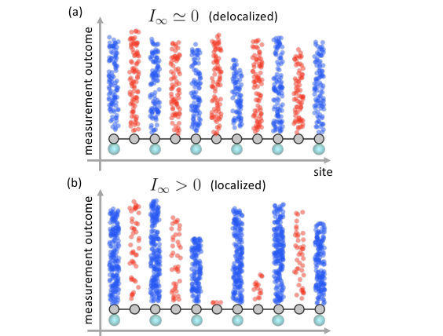
<figcaption class="paper-figure-caption"><b>Fig 4.</b> Figure 5. Behavior of imbalance in the delocalized (top) and lo- calized (bottom) systems, with the blue spheres at the bottom indicating the initial placement of distinguishable particles in the system. The 200 measurement outcomes of the particle density at late times t in the time-evolved state ∣ψ(t)⟩(23) are represented with blue and red circles. (a) In the delocal- ized system (21), at long times, both sublattices are equally occupied on average, reflecting the plane-wave character of the eigenstates of the system and the vanishing of the late-time imbalance (19), indicating the absence of retention of the ini- tial density pattern. (b) The same initial state evolved under the Anderson...</figcaption>
</figure>
</div>

<p><strong>Summary.</strong> The paper introduces a novel experimental protocol using ultracold atoms in optical lattices to probe the quantum geometry of isolated energy bands. By coupling a 1D flat-band system to a 2D bath via a quench, the authors show that the long-time decay of local particle occupations directly measures the integrated quantum distance between the flat-band states. This establishes a direct, measurable link between quantum geometry and the memory of initial spatial patterns.</p>
<p><strong>Why it may be interesting.</strong> This work directly connects measurable, local observables (site occupations) in ultracold atom setups to fundamental, hard-to-measure quantities like quantum geometry, providing a powerful diagnostic tool for AMO physics.</p>
<details>
<summary>Detailed structure</summary>
<p><strong>Main problem.</strong> The primary challenge is experimentally accessing the quantum geometry of individual energy bands, especially in systems where conventional probes fail, such as flat-band regimes.</p>
<p><strong>Main result.</strong> The late-time occupation pattern in a quench protocol directly encodes the integrated overlaps between flat-band states, providing a measurable proxy for the integrated flat-band quantum metric.</p>
<p><strong>Method.</strong> The authors propose an on-site quench protocol where a 1D flat-band lattice is coupled to a 2D flat-band bath, using local occupation measurements to filter out dispersive excitations.</p>
<p><strong>Model / system.</strong> The system involves coupling a 1D flat-band lattice to a 2D flat-band bath, modeled using Lieb lattices or square lattices. The dynamics are simulated by time evolution under a modified Hamiltonian that selectively removes dispersive excitations.</p>
<p><strong>Key observables.</strong> Bipartite density imbalance ($I_{1D}(t)$) and the generalized $r$-partite imbalance ($I(r,s)$), which encode integrated quantum distances.</p>
<p><strong>Important parameters / regimes.</strong> The quench protocol parameters, the momentum transfer $\delta k$, and the ratio of coupling strengths (e.g., $t'_y \ll t_y$) are crucial for controlling the measurement.</p>
<p><strong>Assumptions / limitations.</strong> The method assumes that the late-time occupation pattern retains memory of the initial spatial pattern, allowing the extraction of quantum geometric information.</p>
<p><strong>Figures summary.</strong> Figure 1 illustrates the setup using local population in a 2D Lieb lattice and the resulting stationary density pattern. Figure 2 details the spectral filtering mechanism and the evolution in the 1D stub coupled to the 2D bath.</p>
<p><strong>Paper structure.</strong> The paper introduces the problem of measuring band geometry, proposes the quench protocol using 1D-to-2D coupling, derives the relationship between the late-time imbalance and quantum overlaps, and discusses generalizations to $r$-partite measures.</p>
</details>
<details>
<summary>Abstract</summary>
<p>Quantum geometry underlies a wide range of correlated phenomena in electronic systems, yet accessing the geometry of individual bands remains experimentally challenging. Advances in quantum simulators, such as ultracold atoms in optical lattices, have enabled local state preparation and site-resolved measurements, offering direct access to quantum dynamics beyond conventional transport probes. These developments naturally raise the question of whether band-resolved quantum geometry can be extracted from local occupation readouts. Here, we propose an on-site quench protocol to probe the flat-band quantum geometry via local occupation measurements in an atomic lattice. Our scheme dynamically isolates the flat-band sector by coupling a one-dimensional flat-band lattice to a two-dimensional flat-band bath. The bath selectively removes dispersive excitations, while compact localized states remain trapped due to their overlap with the flat-band modes of the bath. We show that the late-time occupation pattern directly encodes the integrated overlaps between flat-band states separated by the wavevector of the initial density pattern, thereby enabling access to integrated quantum distances between the states separated by the commensurate momenta $δk = 2 πs/r$, $s,r \in \mathbb Z$ and to the integrated flat-band quantum metric. Our results thereby establish a direct connection between quantum geometry and the long-time memory of an initial spatial pattern in flat-band systems.</p>
</details>
<p><sub><a href="#top">↑ back to top</a></sub></p>

<p><a id="paper-2610.13511"></a></p>
<h3 id="finite-quantum-engineering-thermodynamics"><a href="http://arxiv.org/abs/2610.13511v1">Finite Quantum Engineering Thermodynamics</a></h3>
<p><strong>Authors:</strong> Borhan Ahmadi<br>
<strong>Type:</strong> theory · <strong>Category:</strong> statistical mechanics · <strong>PDF:</strong> <a href="https://arxiv.org/pdf/2610.13511v1">https://arxiv.org/pdf/2610.13511v1</a><br>
<strong>Analysis basis:</strong> full PDF text, analyzed in chunks
<strong>Topic relevance:</strong> 🔥 <code>quantum measurements</code> <strong>4/5</strong> · <code>analog quantum simulation</code> <strong>3/5</strong> · <code>Full counting statistics</code> <strong>2/5</strong> · <code>methods for driven-dissipative</code> <strong>2/5</strong> · <code>Keldysh / 2PI / non-Gaussian methods</code> <strong>1/5</strong> · <code>correlated / nonlocal dissipation</code> <strong>1/5</strong> · <code>driven-dissipative phase transition</code> <strong>1/5</strong> · <code>non-equilibrium universality</code> <strong>1/5</strong></p>
<div class="figure-strip-hint">↔ Scroll figures horizontally</div>
<div class="paper-figures-scroll">
<figure class="paper-figure-card">
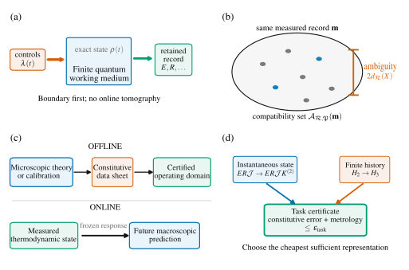
<figcaption class="paper-figure-caption"><b>Fig 1.</b> FIG. 1. Finite quantum engineering thermodynam- ics. (a) The working medium, its boundary, and the con- trols are fixed before selecting what to measure. The mi- croscopic state is ρ(t), but routine operation retains only a small record. (b) Distinct microscopic states can give the same record. Their possible differences in a requested output define the unresolved prediction ambiguity. (c) Detailed dy- namics is used offline to fit and test a constitutive response; online prediction then combines this fixed response with the measured record, without tomography. (d) Missing motion can be probed through present currents and derivatives or through earlier records. The choice balances...</figcaption>
</figure>
<figure class="paper-figure-card">
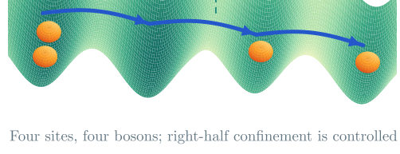
<figcaption class="paper-figure-caption"><b>Fig 2.</b> FIG. 2. Four-site Bose–Hubbard working medium. Four bosons occupy four lattice sites, with nearest-neighbor hopping J (blue arrows) and on-site interaction U. The con- trolled energy offset Λ(t) couples to the right-half particle number NR. The measured record R(t) gives the probabili- ties of finding different numbers of bosons in that half.</figcaption>
</figure>
<figure class="paper-figure-card">
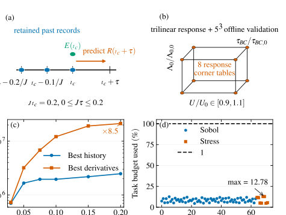
<figcaption class="paper-figure-caption"><b>Fig 3.</b> FIG. 3. A quantum constitutive data sheet for the Bose–Hubbard working medium. (a) At the decision time, the online state uses present energy and the spatial record together with two ensemble records stored from earlier times to predict future right-half occupations. (b) Only eight corner tables are calibrated across the ±10% parameter box. A separate 53 lattice tests sensitivity between corners; it does not increase the online measurement state. (c) At the nom- inal point, finite history needs fewer repeated preparations than the best direct-derivative state. Its advantage grows to approximately 8.5-fold at Jτ = 0.20, showing that more di- rect dynamical information is not always cheaper...</figcaption>
</figure>
<figure class="paper-figure-card">
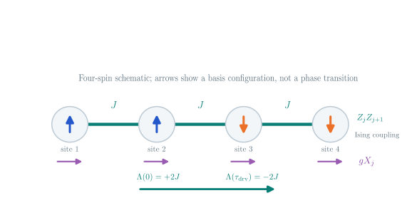
<figcaption class="paper-figure-caption"><b>Fig 4.</b> FIG. 4. Driven transverse-field Ising chain. Four spins interact through nearest-neighbor coupling J and evolve un- der a transverse field g. The longitudinal control Λ(t) couples to the total number of up spins N↑. The measured record R(t) gives the probabilities of different up-spin counts. The arrows illustrate a possible spin configuration.</figcaption>
</figure>
<figure class="paper-figure-card">
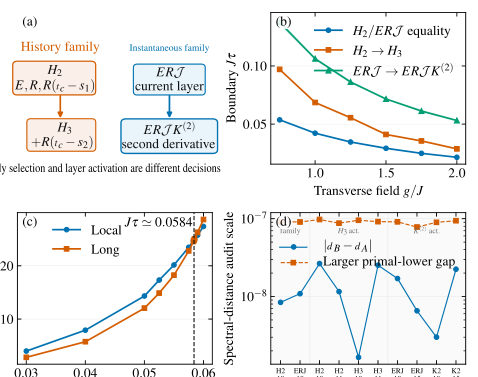
<figcaption class="paper-figure-caption"><b>Fig 5.</b> FIG. 5. Choosing the measured state in the driven Ising chain. (a) Two nested choices are compared: one or two earlier records, and direct current observables with or without the second derivative. Adding a layer is distinct from choosing the cheaper family. (b) As the forecast hori- zon grows, the repetition-cost crossover comes first, followed by activation of the second history node and then the direct curvature layer, at every tested transverse field. These are representation boundaries, not microscopic phase transitions. (c) Within the two-lag history family, a nearby and a longer- memory architecture exchange order near Jτ ≃0.0584. This residual-first diagnostic is not one of the...</figcaption>
</figure>
</div>

<p><strong>Summary.</strong> This paper introduces a task-aware thermodynamic framework for finite quantum systems, determining the minimal set of measurements needed to predict future behavior without knowing the full quantum state. It uses operator geometry and compares different state representations (like history vs. instantaneous) to quantify the trade-off between prediction accuracy and experimental measurement cost. The result is a rigorous method for creating reusable, qualified descriptions of quantum processes.</p>
<p><strong>Why it may be interesting.</strong> This work provides a powerful, quantitative methodology for characterizing the minimal information required to predict complex quantum dynamics, which is crucial for designing realistic quantum engines and quantum control protocols.</p>
<details>
<summary>Detailed structure</summary>
<p><strong>Main problem.</strong> To develop a rigorous thermodynamic framework for finite quantum systems that predicts macroscopic behavior without requiring knowledge of the full microscopic state, while explicitly accounting for measurement costs.</p>
<p><strong>Main result.</strong> The required description is not universal; it must be an 'experimentally economical description' tailored to the specific prediction task, balancing constitutive approximation accuracy against measurement feasibility.</p>
<p><strong>Method.</strong> The authors develop a task-based method using operator geometry to separate exact energy accounting from calibrated macroscopic prediction, comparing direct measurements against historical records.</p>
<p><strong>Model / system.</strong> The framework is tested on finite quantum working media, specifically the Bose-Hubbard model and the driven Ising chain, which serve as testbeds for the general thermodynamic formalism.</p>
<p><strong>Key observables.</strong> Measured records (e.g., probabilities $p_r(t)$), unresolved state ambiguity ($d_R(X)$), and the total measurement cost (number of required shots).</p>
<p><strong>Important parameters / regimes.</strong> The task definition $\Theta_{	ext{eng}}$ dictates the required state description; key regimes involve comparing instantaneous vs. history-based reconstruction.</p>
<p><strong>Assumptions / limitations.</strong> The framework does not replace classical entropy-based admissibility conditions, and the final results are presented as 'engineering optima' rather than universal theorems.</p>
<p><strong>Figures summary.</strong> Figures illustrate the process of using detailed dynamics offline to fit constitutive responses for online prediction, and tables compare resource costs (shot counts) for different state representations (history vs. instantaneous).</p>
<p><strong>Paper structure.</strong> The paper progresses from defining the general task-based thermodynamic problem, to applying it to the Bose-Hubbard model to quantify ambiguity, and finally comparing the resource efficiency of history-based versus instantaneous state reconstructions using the Ising model.</p>
</details>
<details>
<summary>Abstract</summary>
<p>A useful thermodynamic model predicts what a device will do without tracking its full microscopic state. For a finite quantum working medium, the difficult question is which quantities should actually be measured. We develop a task-based method that keeps exact energy accounting separate from calibrated macroscopic prediction. Operator geometry identifies what a measured record determines and bounds what remains uncertain. We then compare direct measurements of dynamical observables with earlier measurements of the same coarse record, selecting the representation together with its measurement cost. A Bose--Hubbard example yields a compact response table tested over a continuous operating region and on unseen microscopic trajectories. A driven Ising chain shows why history is not always the cheaper choice. The result is a way to turn detailed quantum dynamics into a small, reusable, and explicitly qualified thermodynamic description.</p>
</details>
<p><sub><a href="#top">↑ back to top</a></sub></p>

<p><a id="paper-2610.13251"></a></p>
<h3 id="ultrafast-laser-stimulated-field-emission-from-a-metal-a-non-equilibrium-greens-functions-approach"><a href="http://arxiv.org/abs/2610.13251v1">Ultrafast laser-stimulated field emission from a metal: a non-equilibrium Green's functions approach</a></h3>
<p><strong>Authors:</strong> Luciano Jacopo D'Onofrio, Adolfo Avella, Martin Eckstein<br>
<strong>Type:</strong> theory · <strong>Category:</strong> strongly correlated electrons · <strong>PDF:</strong> <a href="https://arxiv.org/pdf/2610.13251v1">https://arxiv.org/pdf/2610.13251v1</a><br>
<strong>Analysis basis:</strong> full PDF text, analyzed in chunks
<strong>Topic relevance:</strong> 🔥 <code>Keldysh / 2PI / non-Gaussian methods</code> <strong>4/5</strong> · <code>methods for driven-dissipative</code> <strong>3/5</strong> · <code>quantum measurements</code> <strong>3/5</strong> · <code>analog quantum simulation</code> <strong>1/5</strong> · <code>correlated / nonlocal dissipation</code> <strong>1/5</strong> · <code>driven-dissipative phase transition</code> <strong>1/5</strong> · <code>non-equilibrium universality</code> <strong>1/5</strong></p>
<div class="figure-strip-hint">↔ Scroll figures horizontally</div>
<div class="paper-figures-scroll">
<figure class="paper-figure-card">
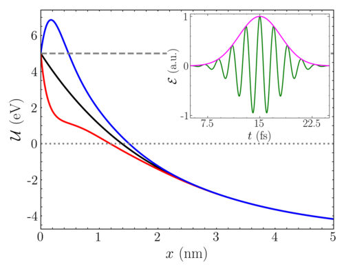
<figcaption class="paper-figure-caption"><b>Fig 1.</b> FIG. 1. Vacuum barrier profile near the matter-vacuum in- terface at three different instants of time: equilibrium (t = 0, black), field maximum (t = tcen, red), and field minimum (t = tcen + Tper/2, blue). The following parameters are used: Vpot = 10 V, F = 5 V/nm, E0 = 2 V/nm, γ0 = 15, λnf = 0.25 nm, λg = 1 nm, tcen = 15 fs, τp = 7 fs, and Tper = 2 fs. The Fermi level (µ = 0 eV) and work func- tion (ϕ = 5 eV) are denoted with dotted and dashed gray lines, respectively. The inset shows the normalized temporal evolution of the pulse electric field (green) modulated by a Gaussian envelope (magenta), both in arbitrary units.</figcaption>
</figure>
<figure class="paper-figure-card">
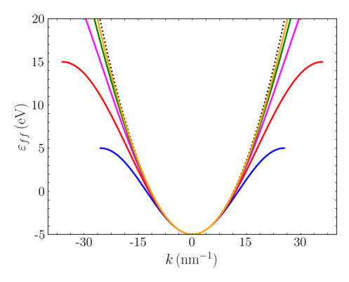
<figcaption class="paper-figure-caption"><b>Fig 2.</b> FIG. 2. Comparison of the far-field free-electron parabola (dotted black line) with tight-binding energy dispersions ob- tained for tv = 2.5 eV (blue), tv = 5.0 eV (red), tv = 10 eV (magenta), tv = 20 eV (green), and tv = 40 eV (yellow). The discrepancy between the parabolic and tight-binding dis- persions worsens at higher momenta and decreases as tv in- creases.</figcaption>
</figure>
<figure class="paper-figure-card">
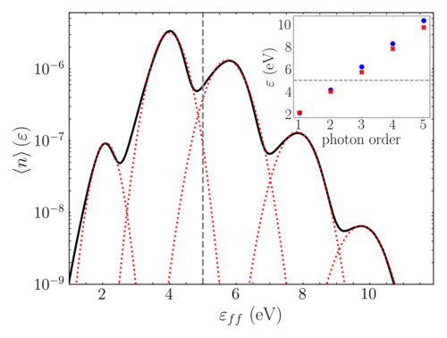
<figcaption class="paper-figure-caption"><b>Fig 3.</b> FIG. 4. Time-integrated far-field electron energy distribution (black solid line), fitted with Gaussian functions (red dotted lines) centered at the arising peaks. In the inset, the peak en- ergy positions obtained from the Gaussian fitting procedure (red crosses) are compared with integer multiples of the pho- ton energy (blue circles), corresponding to different photon orders. In both panels, the work function (ϕ = 5 eV) is indi- cated by a dashed gray line.</figcaption>
</figure>
<figure class="paper-figure-card">
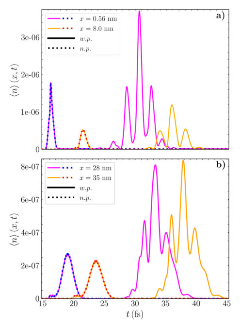
<figcaption class="paper-figure-caption"><b>Fig 4.</b> FIG. 3. Time evolution of electronic populations close to the matter-vacuum interface (a) and in the far-field region (b), shown both with (solid lines) and without (dotted lines) the laser pulse. Specifically, with the vacuum lattice constant set to b = 0.062 nm, the following distances from the interface are considered: x = 0.56 nm (blue and magenta) and x = 8.0 nm (red and orange) in (a); x = ¯x = 28 nm (blue and magenta) and x = 35 nm (red and orange) in (b). In both cases, the artificial electronic bunches in the with- and without-pulse curves overlap in time and are therefore removed via the sub- traction ⟨n⟩(x, t) = ⟨n⟩w.p. (x, t) −⟨n⟩n.p. (x, t).</figcaption>
</figure>
<figure class="paper-figure-card">
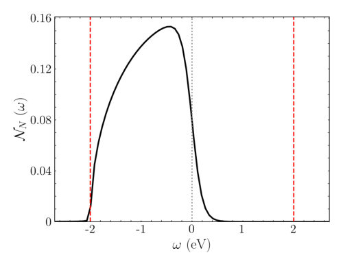
<figcaption class="paper-figure-caption"><b>Fig 5.</b> FIG. 5. Density of occupied states on the last matter site (NN) plotted vs. energy in the uncorrelated case. The vertical dashed red lines mark the boundaries of the matter-energy dispersion (−2 eV and 2 eV) when U = 0, while the dotted gray one coincides with the Fermi level.</figcaption>
</figure>
</div>

<p><strong>Summary.</strong> This work proposes a theoretical framework using non-equilibrium Green's functions to model electron emission from a metal tip driven by intense laser pulses. By incorporating electron-electron interactions, the authors show that correlation effects significantly modify the emitted electron spectrum. This provides a versatile tool for analyzing field emission in strongly correlated quantum systems.</p>
<p><strong>Why it may be interesting.</strong> The combination of ultrafast non-equilibrium dynamics with strong correlation effects (Hubbard-like interactions) in a mesoscopic geometry is highly relevant for understanding energy transfer and emission in advanced quantum devices.</p>
<details>
<summary>Detailed structure</summary>
<p><strong>Main problem.</strong> The paper addresses the theoretical challenge of simulating ultrafast laser-stimulated field emission from a metal while accurately incorporating many-body strong correlation effects, which are often neglected in existing models.</p>
<p><strong>Main result.</strong> The non-equilibrium Green's function approach successfully describes the out-of-equilibrium electron dynamics, revealing that correlation effects modify the electronic structure and are transferred to the far-field spectrum, leading to a dynamic back-action regime.</p>
<p><strong>Method.</strong> The study employs the non-equilibrium Green's function (NEGF) formalism, extending it to include electron-electron interactions via the second-Born approximation.</p>
<p><strong>Model / system.</strong> The system is a metallic nanotip modeled in one dimension, coupled to a vacuum region and driven by an intense ultrafast laser pulse. The Hamiltonian is decomposed into tip, vacuum, and coupling terms.</p>
<p><strong>Key observables.</strong> Far-field energy distribution of emitted electrons, local density of occupied states, and the dynamic polarization of the emitter.</p>
<p><strong>Important parameters / regimes.</strong> Ultrafast laser pulse parameters, applied potential bias ($V_{pot}$), and the strength of electron-electron interactions.</p>
<p><strong>Assumptions / limitations.</strong> The model uses a one-dimensional treatment along the normal direction and treats the tip-vacuum coupling perturbatively in some analyses.</p>
<p><strong>Figures summary.</strong> Not specified.</p>
<p><strong>Paper structure.</strong> The paper develops the NEGF framework for out-of-equilibrium dynamics, details the inclusion of correlation effects via the second-Born approximation, and culminates in solving the Dyson equation to characterize the dynamic back-action regime.</p>
</details>
<details>
<summary>Abstract</summary>
<p>Ultrafast laser-assisted field emission from metallic nanotips is a promising route for generating coherent electron pulses. However, existing theoretical models often neglect many-body strong correlation effects in the emitter's electronic structure and its response to the optical field. In this work, we propose a theoretical framework based on the non-equilibrium Green's function formalism to simulate the out-of-equilibrium electron dynamics across a strongly driven matter-vacuum interface, in a one-dimensional model. Treating the tip-vacuum coupling perturbatively, we find that the interplay between strong-field emission and multi-photon emission regimes can be described in terms of a filtering of the emitter's local density of occupied states through field-dressed vacuum propagators. By including electron-electron interactions via the second-Born approximation, we show that correlation-induced modifications in the electronic structure are directly transferred to the far-field spectrum. Finally, by self-consistently solving the Dyson equation at the interface, we uncover a dynamic back-action regime driven by the optical field, characterized by a periodic polarization of the emitter, which reshapes the far-field spectrum. This shows that the non-equilibrium Green's functions approach provides a versatile framework for exploring and analyzing field emission of correlated electrons.</p>
</details>
<p><sub><a href="#top">↑ back to top</a></sub></p>

<p><a id="paper-2610.13936"></a></p>
<h3 id="a-warped-born-rule-turns-an-observer-into-a-maxwells-demon"><a href="http://arxiv.org/abs/2610.13936v1">A Warped Born Rule Turns an Observer into a Maxwell's Demon</a></h3>
<p><strong>Authors:</strong> Olumakinde Ogunnaike<br>
<strong>Type:</strong> theory · <strong>Category:</strong> statistical mechanics · <strong>PDF:</strong> <a href="https://arxiv.org/pdf/2610.13936v1">https://arxiv.org/pdf/2610.13936v1</a><br>
<strong>Analysis basis:</strong> full PDF text, analyzed in chunks
<strong>Topic relevance:</strong> 🔥 <code>quantum measurements</code> <strong>4/5</strong> · <code>methods for driven-dissipative</code> <strong>3/5</strong> · <code>non-equilibrium universality</code> <strong>3/5</strong> · <code>analog quantum simulation</code> <strong>1/5</strong> · <code>correlated / nonlocal dissipation</code> <strong>1/5</strong> · <code>driven-dissipative phase transition</code> <strong>1/5</strong></p>
<div class="figure-strip-hint">↔ Scroll figures horizontally</div>
<div class="paper-figures-scroll">
<figure class="paper-figure-card">
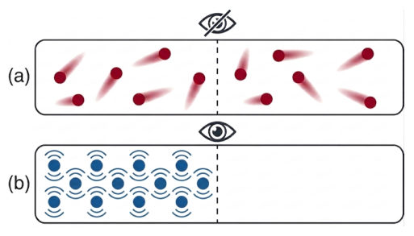
<figcaption class="paper-figure-caption"><b>Fig 1.</b> FIG. 1. A many-body Maxwell’s demon. (a) Ordinary dif- fusion explores a uniform gas. (b) Reweighting occupation- measurement histories can collect the particles into dense, nearly frozen regions for warped rules with b &gt; 1.</figcaption>
</figure>
<figure class="paper-figure-card">
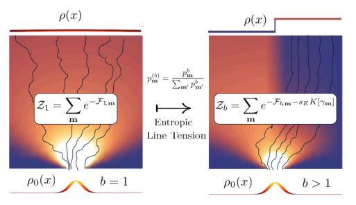
<figcaption class="paper-figure-caption"><b>Fig 2.</b> FIG. 2. Regular diffusion and entropic selection of particle his- tories. Left: at b = 1, a localized distribution spreads toward a uniform gas. Right: for b &gt; 1, globally weighted histories fa- vor fewer uncertain readouts and can select a phase-separated gas. The inset schematically sums over measurement records m, each with reference cost Fb,m and a collection of particle paths γm. The total activity K[γm] = P</figcaption>
</figure>
<figure class="paper-figure-card">
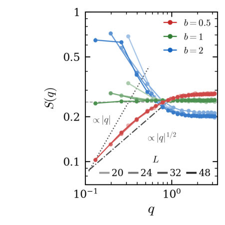
<figcaption class="paper-figure-caption"><b>Fig 3.</b> FIG. 3. Numerical signatures of the entropic bias in sequential pure-state histories on open, half-filled chains, L = 20–48. The full structure factor is enhanced at small q for b = 2 (blue), nearly flat for b = 1 (green), and suppressed for b = 0.5 (red). Spectra average the latter half of each run. Power laws are guides, not fitted asymptotic exponents. Methods and definitions are in Appendix G.</figcaption>
</figure>
<figure class="paper-figure-card">
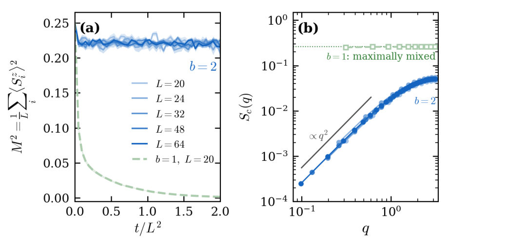
<figcaption class="paper-figure-caption"><b>Fig 4.</b> FIG. 4. Complementary signatures in the history-averaged density-matrix ensemble with Haar-random number-conserving gates. (a) M 2 = L−1 P</figcaption>
</figure>
<figure class="paper-figure-card">
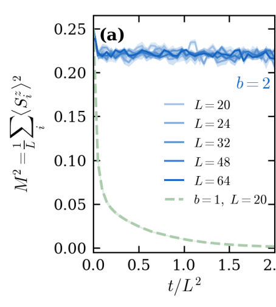
<figcaption class="paper-figure-caption"><b>Fig 5.</b> Figure 3 instead draws each outcome from its own con- ditional pure state, implementing P seq b in Eq. (4). Its structure factor retains both the conditional density pro- files and their quantum fluctuations. Here fU = 0.6. The unlike-pair block is</figcaption>
</figure>
</div>

<p><strong>Summary.</strong> This work explores how modifying the Born rule in quantum measurements introduces a systematic bias into the system's evolution. This bias causes the quantum gas to either cluster into dense, frozen states ($b>1$) or become highly uniform (hyperuniform, $b<1$). The findings suggest that the act of observation itself can act as an engine for entropy change, analogous to Maxwell's Demon.</p>
<p><strong>Why it may be interesting.</strong> It provides a deep, non-trivial link between the fundamental postulates of quantum measurement (the Born rule) and macroscopic thermodynamic behavior (entropy extraction and phase ordering), which is highly relevant to non-equilibrium statistical mechanics.</p>
<details>
<summary>Detailed structure</summary>
<p><strong>Main problem.</strong> The paper investigates the many-body consequences of replacing the standard Born rule in quantum measurements with a warped rule, $p_b(m) \propto \lVert P_m|\psi
angle
Vert^{2b}$. This modification introduces a probabilistic bias over measurement histories.</p>
<p><strong>Main result.</strong> The bias dictates the system's long-term state: $b>1$ drives the gas toward clustering (entropy extraction, like Maxwell's demon), while $b<1$ suppresses long-wavelength fluctuations, leading to a hyperuniform gas.</p>
<p><strong>Method.</strong> The analysis uses information theory, comparing the warped rule to the standard Born rule, and employs numerical simulations like Matrix Product States (MPS) to study the resulting phase selection in 1D quantum gases.</p>
<p><strong>Model / system.</strong> The study models a diffusing quantum gas with conserved particle number, analyzed in 1D. The dynamics are related to an activity-biased Symmetric Exclusion Process (SEP) when considering the continuous-time limit.</p>
<p><strong>Key observables.</strong> Structure factors $S(q)$, local polarization $M_2(t)$, and the bias parameter $b$.</p>
<p><strong>Important parameters / regimes.</strong> The bias parameter $b$, which controls the sign of the entropic bias ($b-1$). Regimes include $b>1$ (clustering) and $b<1$ (hyperuniformity).</p>
<p><strong>Assumptions / limitations.</strong> The analysis distinguishes between global and sequential normalization procedures, and the connection to solvable classical models (SEP) is used to guide the understanding of the quantum bias.</p>
<p><strong>Figures summary.</strong> Figures illustrate the physical effect of the bias, showing particle collection for $b>1$ and suppression of fluctuations for $b<1$ via structure factor comparisons.</p>
<p><strong>Paper structure.</strong> The paper develops the mathematical framework by introducing the warped rule, deriving the resulting bias, and then applying this framework to a 1D quantum gas model, comparing results across different ensemble averaging methods.</p>
</details>
<details>
<summary>Abstract</summary>
<p>Quantum mechanics seems to be an incredibly delicate theory. Slight alterations to nearly any part of its structure can lead to huge qualitative differences and wildly unphysical predictions. Here, we explore the many-body consequences of replacing the Born rule $p(m)\propto\|P_m|ψ\rangle|^2$ by a warped rule $p_b(m)\propto\|P_m|ψ\rangle\|^{2b}$. Specifically, in systems with conserved particle number, evolution punctuated by repeated local particle observations acquires a probabilistic bias over measurement histories with an effect controlled by the sign of $b-1$. For $b>1$, this bias generically drives the gas to collect into nearly frozen configurations. Similar to the action of Maxwell's demon, the simple act of observation seems to extract entropy from a closed system. For $b<1$, the bias is reversed, generically scouring out long-wavelength fluctuations to produce a hyperuniform gas. We study this effect in a one-dimensional quantum gas, where these two phases are derived analytically for a particular measurement scheme and corroborated numerically for more general procedures with discrete-time projective-measurement circuit models using matrix product state simulations. We additionally discuss how this bias manifests in a common technique that often employs this warped rule, the ``replica trick,'' implying qualitative differences between finite-replica and replica-limit calculations.</p>
</details>
<p><sub><a href="#top">↑ back to top</a></sub></p>

<p><a id="paper-2610.12579"></a></p>
<h3 id="correlated-pair-creation-with-positive-and-negative-frequency-oscillators-in-a-trapped-ion-quantum-simulator"><a href="http://arxiv.org/abs/2610.12579v1">Correlated Pair Creation with Positive- and Negative-Frequency Oscillators in a Trapped-Ion Quantum Simulator</a></h3>
<p><strong>Authors:</strong> Visal So, Mingjian Zhu, Han Pu, Guido Pagano<br>
<strong>Type:</strong> theory · <strong>Category:</strong> other · <strong>PDF:</strong> <a href="https://arxiv.org/pdf/2610.12579v1">https://arxiv.org/pdf/2610.12579v1</a><br>
<strong>Analysis basis:</strong> full PDF text, analyzed in chunks
<strong>Topic relevance:</strong> 🔥 <code>analog quantum simulation</code> <strong>4/5</strong> · <code>driven-dissipative phase transition</code> <strong>2/5</strong> · <code>non-equilibrium universality</code> <strong>2/5</strong> · <code>Keldysh / 2PI / non-Gaussian methods</code> <strong>1/5</strong> · <code>QC/QI experiment</code> <strong>1/5</strong> · <code>Tavis-Cummings &amp; cavity-many-emitter</code> <strong>1/5</strong> · <code>methods for driven-dissipative</code> <strong>1/5</strong> · <code>quantum optics experiment</code> <strong>1/5</strong></p>
<div class="figure-strip-hint">↔ Scroll figures horizontally</div>
<div class="paper-figures-scroll">
<figure class="paper-figure-card">
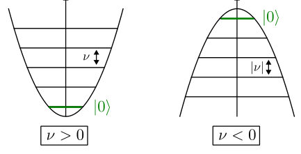
<figcaption class="paper-figure-caption"><b>Fig 1.</b> FIG. 1. Engineering the sign of an effective mode frequency. (a) The two frequency components of the bichromatic laser field [colored vertical bars] are placed symmetrically about the shifted carrier ωq −ω0 at a distance ωm + δ. For δ &lt; 0, the tones lie between the carrier and the motional sidebands and realize an ordinary oscillator with ν = −δ &gt; 0. For δ &gt; 0, they lie outside the sidebands and realize a negative-frequency oscillator with ν = −δ &lt; 0. (b) Corresponding energy ladders in the rotating frame. For ν &lt; 0, the ladder is inverted, and the phonon vacuum |0⟩lies at the top of the effective energy spectrum. We emphasize that the parabolic curves depict rotating-frame energies rather...</figcaption>
</figure>
<figure class="paper-figure-card">
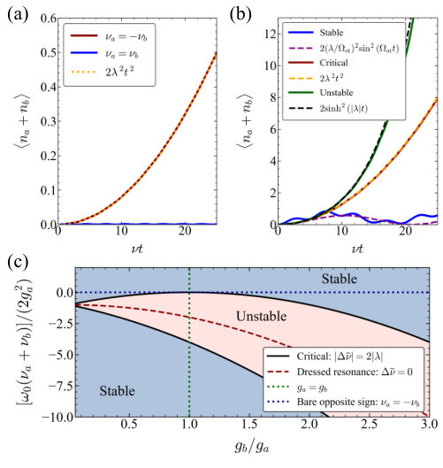
<figcaption class="paper-figure-caption"><b>Fig 2.</b> FIG. 2. Bosonic pair dynamics and dynamical instability in the two-mode quantum Rabi model in the Schrieffer-Wolff frame. (a) Comparison between the all-positive-frequency case, νb = ν (blue), and the opposite-sign case, νb = −ν (red), for ga = gb = ν. The opposite-sign case has λ = 0.02ν and ∆eν = 0.04ν = 2|λ|, placing it at the critical boundary. (b) Stable, critical, and dynamically unstable regimes at fixed pair coupling λ = 0.08ν. The stable case (blue) has ga = ν, gb = 4ν, νb = −ν, and ∆eν = 0.34ν. The critical case (red) has ga = gb = 2ν, νb = −ν, and ∆eν = 0.16ν = 2|λ|. The unstable case (green) has ga = gb = 2ν, νb = −1.16ν, and ∆eν = 0. In panels (a) and (b), the system is...</figcaption>
</figure>
<figure class="paper-figure-card">
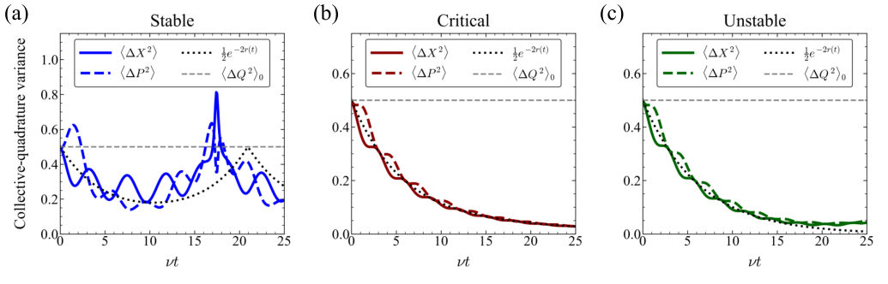
<figcaption class="paper-figure-caption"><b>Fig 3.</b> FIG. 3. Collective-quadrature squeezing in the stable, critical, and dynamically unstable regimes. The initial state and parameter sets are the same as in Fig. 2(b). Solid and dashed colored curves show the variances ⟨∆X2⟩and ⟨∆P 2⟩, respectively, for the full quantum Rabi model in the Schrieffer-Wolff frame, while black dotted curves show the dispersive rotating-wave prediction. The local quadrature phases satisfy ϕa + ϕb = arg[⟨a(t)b(t)⟩] + π, following the instantaneous squeezed axes (see Appendix F). The gray horizontal dashed line denotes the two-mode-vacuum variance, ⟨ψ0|∆X2|ψ0⟩= ⟨ψ0|∆P 2|ψ0⟩= 1/2 ≡ ⟨∆Q2⟩0, and values below this level indicate squeezing. Panels (a)–(c) correspond to...</figcaption>
</figure>
<figure class="paper-figure-card">
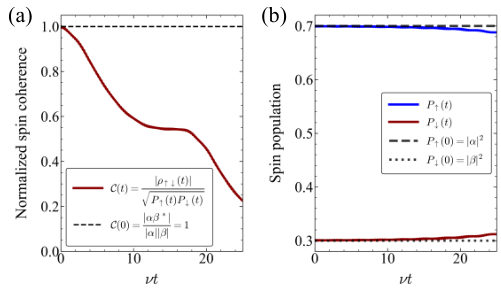
<figcaption class="paper-figure-caption"><b>Fig 4.</b> FIG. 4. Spin coherence and populations of the opposite-sign two-mode quantum Rabi model. The system is initialized in (α |↑⟩+ β |↓⟩) ⊗|0a, 0b⟩with |α|2 = 0.70 and |β|2 = 0.30. The parameters are ω0 = 100ν, νa = ν, νb = −1.16ν, and ga = gb = 2ν, corresponding to the dispersive pair coupling λ = 2gagb/ω0 = 0.08ν. (a) Population-normalized spin coherence, C(t) = |ρ↑↓(t)|/ p</figcaption>
</figure>
<figure class="paper-figure-card">
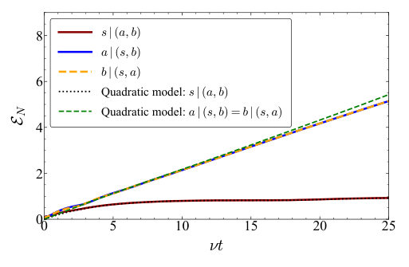
<figcaption class="paper-figure-caption"><b>Fig 5.</b> FIG. 5. Spin-boson and tripartite entanglement generated by the full two-mode quantum Rabi dynamics. Logarithmic negativities are evaluated across the three bipartitions s|(a, b), a|(s, b), and b|(s, a). The parameters and initial state are the same as in Fig. 4. Analytical predictions from the quadratic dispersive model (see Appendix I) are shown for comparison; within this model, Ea|(s,b) N = Eb|(s,a) N .</figcaption>
</figure>
</div>

<p><strong>Summary.</strong> This paper demonstrates how trapped-ion quantum simulators can be used to engineer complex bosonic dynamics by controlling the relative signs of effective motional frequencies. By switching these signs, the system's interaction changes from simple energy exchange to correlated pair creation, enabling the generation of highly entangled, non-Gaussian bosonic states.</p>
<p><strong>Why it may be interesting.</strong> This work provides a concrete, programmable method using trapped ions to engineer non-equilibrium quantum dynamics, moving beyond simple resonance to exploit frequency sign control for advanced quantum state preparation.</p>
<details>
<summary>Detailed structure</summary>
<p><strong>Main problem.</strong> The paper addresses how engineering the relative signs of effective bosonic frequencies can fundamentally change the dynamics in spin-boson systems, transitioning the interaction from simple excitation exchange to correlated pair creation.</p>
<p><strong>Main result.</strong> By controlling the sign of the effective frequencies, the system realizes a two-mode parametric amplifier exhibiting distinct oscillatory, critical, and exponentially amplifying regimes, leading to the generation of multi-partite entanglement.</p>
<p><strong>Method.</strong> The analysis relies on deriving effective Hamiltonians using the Schrieffer-Wolff transformation and analyzing the resulting dynamics in the dispersive regime.</p>
<p><strong>Model / system.</strong> The system is a trapped-ion quantum simulator modeled by a spin-boson Hamiltonian coupled to multiple bosonic motional modes. The control mechanism involves using bichromatic laser fields to program the effective frequencies ($
u$) to have opposite signs.</p>
<p><strong>Key observables.</strong> Collective-quadrature squeezing, bipartite and tripartite spin-boson entanglement (measured via logarithmic negativity), and the Duan-Simon separability bound violation.</p>
<p><strong>Important parameters / regimes.</strong> The relative signs of the effective bosonic frequencies ($
u_a$ and $
u_b$), the detuning ($\delta$), and the system's operating regime (dispersive, critical, unstable).</p>
<p><strong>Assumptions / limitations.</strong> The analysis assumes the Lamb-Dicke regime and operates within the dispersive regime, allowing for perturbative expansions in the coupling strengths.</p>
<p><strong>Figures summary.</strong> Figures illustrate the engineering of frequency signs using laser tones and show comparisons of bosonic populations and quadrature variances across different dynamic regimes (stable, critical, unstable).</p>
<p><strong>Paper structure.</strong> The paper progresses from establishing the frequency control mechanism (sign switching) to deriving the effective two-mode Hamiltonian, analyzing the resulting squeezing and entanglement in different dynamic regimes, and finally detailing the generation of non-Gaussian entangled states via spin postselection.</p>
</details>
<details>
<summary>Abstract</summary>
<p>Spin-dependent forces enable independent control over the effective frequencies of bosonic motional modes and their coupling strengths to spins in trapped-ion spin-boson quantum simulators. We show that the relative signs of these effective frequencies provide an important programmable resource for engineering distinct multimode dynamics. Focusing on a two-mode quantum Rabi model, changing the frequencies of the two modes from the same sign to opposite signs reorganizes the resonance structure of the spin-mediated bosonic interaction, converting the dominant resonant process from excitation exchange to correlated pair creation. In the dispersive regime, the resulting effective interaction realizes a two-mode parametric amplifier with stable oscillatory, critical, and exponentially amplifying regimes separated by a spin-dependent instability threshold. Across these regimes, the dynamics generate collective-quadrature squeezing and bipartite motional entanglement. Preparing the spin in a coherent superposition further allows different spin components to experience distinct stability regimes, generating tripartite spin-boson entanglement, while spin postselection can coherently combine the conditional bosonic branches to generate non-Gaussian entangled bosonic states. Finally, we outline an implementation using parameters within reach of current trapped-ion platforms.</p>
</details>
<p><sub><a href="#top">↑ back to top</a></sub></p>

<p><a id="paper-2610.13622"></a></p>
<h3 id="operational-signatures-of-exceptional-quantum-channels"><a href="http://arxiv.org/abs/2610.13622v1">Operational signatures of exceptional quantum channels</a></h3>
<p><strong>Authors:</strong> Paulo A. Brandão<br>
<strong>Type:</strong> theory · <strong>Category:</strong> other · <strong>PDF:</strong> <a href="https://arxiv.org/pdf/2610.13622v1">https://arxiv.org/pdf/2610.13622v1</a><br>
<strong>Analysis basis:</strong> full PDF text, analyzed in chunks
<strong>Topic relevance:</strong> 🔥 <code>quantum measurements</code> <strong>4/5</strong> · <code>driven-dissipative phase transition</code> <strong>3/5</strong> · <code>methods for driven-dissipative</code> <strong>3/5</strong> · <code>Full counting statistics</code> <strong>1/5</strong> · <code>correlated / nonlocal dissipation</code> <strong>1/5</strong> · <code>non-equilibrium universality</code> <strong>1/5</strong></p>
<div class="figure-strip-hint">↔ Scroll figures horizontally</div>
<div class="paper-figures-scroll">
<figure class="paper-figure-card">

<figcaption class="paper-figure-caption"><b>Fig 1.</b> FIG. 1. Probability p+(n) of obtaining the outcome + after n successive applications of the exceptional channel ΦEP, for λ = 0.8 and the initial state ρ0 = 1</figcaption>
</figure>
<figure class="paper-figure-card">

<figcaption class="paper-figure-caption"><b>Fig 2.</b> Figure 1 shows how the visibility of the exceptional point depends on the observable, even though the channel and the initial state are kept fixed. For the direction</figcaption>
</figure>
</div>

<p><strong>Summary.</strong> This paper introduces an operational theory for exceptional points (EPs) by analyzing the repeated application of quantum channels ($\Phi^n$) rather than relying on Hamiltonians. It shows that the characteristic signature of an EP—a polynomial-exponential term—is not inherent to the dynamics but depends on the specific measurement observable used. This provides a direct, experimentally accessible diagnostic tool for identifying EPs in open quantum systems.</p>
<p><strong>Why it may be interesting.</strong> This work provides a powerful, measurement-centric framework to detect EPs in open quantum systems, moving the concept from purely Hamiltonian/Liouvillian analysis to directly measurable quantities.</p>
<details>
<summary>Detailed structure</summary>
<p><strong>Main problem.</strong> To develop an operational theory for exceptional points (EPs) that bypasses the need for a Hamiltonian or a master equation.</p>
<p><strong>Main result.</strong> The operational signature of an EP is revealed through discrete polynomial-exponential terms in the measurement probabilities, which depend critically on the specific measurement observable used.</p>
<p><strong>Method.</strong> The analysis uses the repeated application of a completely positive trace-preserving (CPTP) quantum channel ($\Phi^n$) and relates the resulting probabilities to the Jordan chain structure of the channel superoperator.</p>
<p><strong>Model / system.</strong> The general system is described by a CPTP quantum channel ($\Phi$), which governs the evolution of the density matrix. A specific example uses a qubit model in a 2D Hilbert space analyzed via Pauli operators.</p>
<p><strong>Key observables.</strong> The probability $p_A^n(x|
ho) = 	ext{tr}[A(x)\Phi^n(
ho)]$, particularly the transient term proportional to $n\lambda^{n-1}$.</p>
<p><strong>Important parameters / regimes.</strong> The channel parameters ($   heta, \lambda$) defining the EP, and the measurement observable $A$ (or its corresponding measurement direction $\vec{m}$).</p>
<p><strong>Assumptions / limitations.</strong> The theory is formulated independently of PT symmetry, Lindblad equations, and continuous-time limits; the observable $A$ is assumed to be a POVM.</p>
<p><strong>Figures summary.</strong> Figure 1 illustrates the dependence of the measured probability $p_+(n)$ on the measurement direction $\vec{m}$, showing the signature only for a specific direction $\vec{m}_a$.</p>
<p><strong>Paper structure.</strong> The paper first establishes the general operational framework using CPTP channels and Jordan chains. It then applies this framework to a concrete qubit model, explicitly calculating the time evolution and demonstrating the measurement dependence of the EP signature.</p>
</details>
<details>
<summary>Abstract</summary>
<p>Exceptional points (EPs) are usually introduced as defective degeneracies of non-Hermitian Hamiltonians and, in fully open quantum dynamics, of Liouvillian generators. Here we formulate an operational theory of exceptional points that does not invoke a Hamiltonian or a master equation. The primitive dynamical object is a completely positive trace-preserving (CPTP) quantum channel $Φ$, applied an integer number $n$ of times, while physical data are probabilities $p_n^{\mathbf A}(x|ρ)$ associated with states $ρ$ and observables $\mathbf A$ having measurements results $x$. We define exceptional channels through nontrivial Jordan chains of $Φ$ and show that a Jordan block of order $m$ generates discrete polynomial-exponential terms with maximal degree $m-1$. This places the physics of exceptional points in contact with what can be directly measured in experiments.</p>
</details>
<p><sub><a href="#top">↑ back to top</a></sub></p>

<p><a id="paper-2610.12551"></a></p>
<h3 id="engineering-ergodicity-breaking-and-stable-emergent-conservation-laws-in-a-generic-quantum-many-body-system-under-strong-periodic-drive"><a href="http://arxiv.org/abs/2610.12551v1">Engineering Ergodicity-Breaking and Stable Emergent Conservation Laws in a Generic Quantum Many-body System Under Strong Periodic Drive</a></h3>
<p><strong>Authors:</strong> Sagnik Chaudhuri, Anirban Das, Asmi Haldar, Arnab Das<br>
<strong>Type:</strong> theory · <strong>Category:</strong> statistical mechanics · <strong>PDF:</strong> <a href="https://arxiv.org/pdf/2610.12551v1">https://arxiv.org/pdf/2610.12551v1</a><br>
<strong>Analysis basis:</strong> full PDF text, analyzed in chunks
<strong>Topic relevance:</strong> 🔥 <code>scars &amp; prethermalization</code> <strong>4/5</strong> · <code>analog quantum simulation</code> <strong>3/5</strong> · <code>driven-dissipative phase transition</code> <strong>1/5</strong> · <code>methods for driven-dissipative</code> <strong>1/5</strong> · <code>non-equilibrium universality</code> <strong>1/5</strong></p>
<div class="figure-strip-hint">↔ Scroll figures horizontally</div>
<div class="paper-figures-scroll">
<figure class="paper-figure-card">

<figcaption class="paper-figure-caption"><b>Fig 1.</b> FIG. 1. Nonuniversal Floquet Thermalization and Freezing Under Strong Driving. Left: for L = 20, the magneti- zation autocorrelation remains near unity for H1, decays nearly to zero for H2, and reaches an intermediate plateau for H3; the inset shows the late-time averaged magnetization autocorrelation Am for L = 14, 16, 18, 20 (the late-time averages have been computed over 1000 uniformly spaced cycle numbers in 108 ≤n ≤1011). Right: starting from a finite-temperature mixed state (β = 0.05), mx retains its initial value for H1, while H2 and H3 relax to their infinite-time diagonal-ensemble averages (dotted lines); the inset shows |DEA(mx) −mx(0)| versus L. The decreasing plateaus of H2, H3...</figcaption>
</figure>
<figure class="paper-figure-card">

<figcaption class="paper-figure-caption"><b>Fig 2.</b> FIG. 2. Restoring Operator Memory by Hamiltonian Engineering: Upper panels: H2; lower panels: H3. Left: static corrections give near-unity memory (triangles), whereas the original models lose memory with increasing L (circles). Right: the combined drive components (red triangles) remove the downward size trend present for incomplete combinations. Amplitudes are indicated; ωa denotes the corresponding model’s frequency. The late-time averages Am are computed over 1000 uniformly spaced cycle numbers in 108 ≤n ≤1011. Real-time dynamics and amplitude scans appear in the Supplemental Material [20].</figcaption>
</figure>
<figure class="paper-figure-card">

<figcaption class="paper-figure-caption"><b>Fig 3.</b> FIG. 3. Quasi-locality of Heff in Spin-flip Ordered Se- ries for the bond-driven Ising model in the strongly driven regime. The main panel shows the Frobenius norm ∥H(ξ) eff∥ of the even-ξ spin-flip sectors for H2 + HC 2 as a function of the Hamming distance ξ, for JD = 30ω1 and system sizes L = 8, 10, 12, 14. For all system sizes, the norm rapidly decays with increasing ξ, and the decay sets in at approximately the same spin-flip distance, indicating a robust quasi-local struc- ture of the effective Hamiltonian. The right inset shows the corresponding spin-flip-resolved norm for H2 without the cor- rection term, where, apart from the diagonal sector ξ = 0, the dominant weight is...</figcaption>
</figure>
</div>

<p><strong>Summary.</strong> This theoretical work develops methods to engineer stable, non-thermalizing quantum phases in periodically driven many-body systems. By identifying a necessary condition—that the effective Hamiltonian's time-independent part must be X-only—the authors propose specific local modifications to the system Hamiltonian or drive. These engineering techniques successfully stabilize dynamical freezing and ensure the effective dynamics remain quasi-local, offering a pathway to control quantum information flow.</p>
<p><strong>Why it may be interesting.</strong> This work provides a concrete, engineering-based mechanism to control fundamental quantum dynamics (thermalization vs. localization) in periodically driven systems, which is highly relevant for designing quantum simulators or robust quantum memories.</p>
<details>
<summary>Detailed structure</summary>
<p><strong>Main problem.</strong> The paper addresses the challenge of engineering stable ergodicity-breaking (EB) phases and emergent conservation laws in quantum many-body systems subjected to strong periodic driving.</p>
<p><strong>Main result.</strong> Local engineering of the system's Hamiltonian or drive operator can stabilize Dynamical Freezing (DF) by enforcing a specific X-only structure on the effective time-independent part of the Hamiltonian, leading to a quasi-local effective Floquet Hamiltonian.</p>
<p><strong>Method.</strong> The analysis combines Floquet theory, the construction of an effective Hamiltonian ($H_{	ext{eff}}$), and diagnostic tools like long-time autocorrelation functions and the Frobenius norm applied to spin-flip ordered series.</p>
<p><strong>Model / system.</strong> The study uses generic quantum many-body systems, often modeled by spin chains (e.g., Ising-type models $H_1, H_2, H_3$), subjected to time-periodic driving $H(t)$. The dynamics are analyzed in the rotating frame.</p>
<p><strong>Key observables.</strong> Normalized long-time-averaged autocorrelation of local operators ($m_x$), and the weight of spin-flip sectors ($\lVert H(\xi)_{	ext{eff}} 
Vert$) of the effective Hamiltonian.</p>
<p><strong>Important parameters / regimes.</strong> Strong drive amplitude ($AD$), the threshold for ergodicity breaking, and the Hamming distance ($\xi$) used to probe the locality of $H_{	ext{eff}}$.</p>
<p><strong>Assumptions / limitations.</strong> The core conjecture is that stable EB requires the time-independent part of the rotating frame Hamiltonian ($V_0$) to be composed exclusively of X operators. Quasi-locality is assumed to be sufficient for stable, non-thermalizing dynamics.</p>
<p><strong>Figures summary.</strong> Figures compare autocorrelation functions showing memory retention (stable EB) versus decay (unstable DF). They also plot the weight of spin-flip sectors ($\lVert H(\xi)_{	ext{eff}} 
Vert$) to demonstrate that engineered protocols suppress large-$\xi$ weight, indicating quasi-locality.</p>
<p><strong>Paper structure.</strong> The paper establishes the problem of strong driving leading to ergodicity breakdown, introduces the criterion for stable EB ($V_0$ must be X-only), details two engineering routes (time-independent and drive modification), and finally verifies the success of these engineering methods by showing the resulting $H_{	ext{eff}}$ is quasi-local.</p>
</details>
<details>
<summary>Abstract</summary>
<p>A periodically driven quantum many-body system is believed to approach a locally infinite-temperature-like state as dictated by the ergodicity hypothesis, when all the couplings/parameters are of the same order. When the drive is stronger than a threshold value, a large class of systems is shown to break this mandate, exhibiting Dynamical Freezing (DF): ergodicity is broken due to the emergence of local operators with permanent memory of their initial values (PRX 11, 021008, 2021). However, an exception to DF has recently been noted in a particular setting (PRX 16, 011041, 2026). Here we identify the condition for ergodicity-breaking in a system under strong drive, and show how to stabilize DF by exact, local engineering. We further show that the Floquet Hamiltonian $H_{eff} = (i/T)\ln{[U(T)]}$ is non-local when ordered by spin-flips, in a non-DF system, while it turns quasi-local under our simple, local DF engineering that keeps the Hamiltonian $H(t)$ still non-integrable at each $t$. This perplexing non-universality is absent in equilibrium, where non-integrability is believed to imply ergodicity and thermalization universally. Our work paves a way to engineering novel ergodicity-broken interacting Floquet phases of matter in various quantum platforms, and also endows DF-assisted quantum error mitigation and state stabilization techniques (see Nature 653, 1027 (2026)) with unprecedented versatility and flexibility.</p>
</details>
<p><sub><a href="#top">↑ back to top</a></sub></p>

<p><a id="paper-2610.12652"></a></p>
<h3 id="entropy-production-in-mesoscopic-electronic-transport-beyond-weak-coupling"><a href="http://arxiv.org/abs/2610.12652v1">Entropy Production in Mesoscopic Electronic Transport Beyond Weak-Coupling</a></h3>
<p><strong>Authors:</strong> Ivana R. A. C. Lucena, Caio H. Lewenkopf, Alexandre R. Rocha<br>
<strong>Type:</strong> theory · <strong>Category:</strong> statistical mechanics · <strong>PDF:</strong> <a href="https://arxiv.org/pdf/2610.12652v1">https://arxiv.org/pdf/2610.12652v1</a><br>
<strong>Analysis basis:</strong> full PDF text, analyzed in chunks
<strong>Topic relevance:</strong> 🔥 <code>Full counting statistics</code> <strong>4/5</strong> · <code>Keldysh / 2PI / non-Gaussian methods</code> <strong>2/5</strong> · <code>non-equilibrium universality</code> <strong>2/5</strong> · <code>methods for driven-dissipative</code> <strong>1/5</strong> · <code>quantum measurements</code> <strong>1/5</strong></p>
<div class="figure-strip-hint">↔ Scroll figures horizontally</div>
<div class="paper-figures-scroll">
<figure class="paper-figure-card">

<figcaption class="paper-figure-caption"><b>Fig 1.</b> FIG. 1. Schematic representation of a two-terminal meso- scopic conductor connected to left (L) and right (R) electronic reservoirs. The solid green curve illustrates the total energy- dependent transmission T (ε), where µα denotes the chemi- cal potential and Γα the coupling to lead α ∈{L, R}. Thin black lines depict the line-shape profiles of individual reso- nant levels with average level spacing ∆. (a) Weak-coupling regime (Γ ≪∆), characterized by well-isolated single-level resonances. (b) Strong-coupling regime (Γ ≳∆), featuring strongly overlapping resonances with coherent level broaden- ing.</figcaption>
</figure>
<figure class="paper-figure-card">

<figcaption class="paper-figure-caption"><b>Fig 2.</b> FIG. 2. Probability distributions P∆t(N) of the net trans- ferred particle number in the weak-coupling regime, with ΓL = ΓR = 0.00125 eV (Γ = 0.0025 eV). Panels (a,b) cor- respond to a chemical potential difference ∆µ = 0.8 eV and panels (c,d) correspond to ∆µ = 2.0 eV. The left column [(a,c)] shows results for kBT = 0.25 eV, while the right column [(b,d)] corresponds to kBT = 0.025 eV. Different curves corre- spond to increasing dimensionless observation times Γ∆t/ℏ. The vertical dotted line marks N = 0, separating forward (N &gt; 0) from backward (N &lt; 0) particle transfer events.</figcaption>
</figure>
<figure class="paper-figure-card">

<figcaption class="paper-figure-caption"><b>Fig 3.</b> FIG. 4. Cumulants of the particle distribution in the weak- coupling regime as functions of bias voltage ∆µ. In all panels, ΓL = ΓR = 0.00125 eV (Γ = 0.0025 eV) and ε0 = −0.5 eV. (a) First cumulant (average particle current IN) and (b) sec- ond cumulant (zero-frequency noise S2) normalized per di- mensionless observation time. (c) Dimensionless skewness S (normalized third cumulant) and (d) dimensionless kurtosis K (normalized fourth cumulant). Purple curves correspond to kBT = 0.25 eV and orange curves to kBT = 0.025 eV. The vertical dotted line at ∆µ = 1 eV marks the threshold bias at which the resonant level enters the transport window for the symmetric voltage drop considered here. The...</figcaption>
</figure>
<figure class="paper-figure-card">

<figcaption class="paper-figure-caption"><b>Fig 4.</b> FIG. 5. Probability distributions P∆t(N) of the net trans- ferred particle number in the strong-coupling regime for trans- mission probabilities (a) τ = 0.2, (b) τ = 0.5, and (c) τ = 0.8. The distributions P∆t(N) are shown for different dimension- less observation times ∆tkBT/h, as indicated by the color scale. The insets show ln[P∆t(N)/P∆t(−N)] (symbols) at ∆tkBT/h = 16, together with the fluctuation-theorem pre- diction AN (solid line). Here, kBT = 0.25 eV and ∆µ = 0.20 eV (A = 0.8).</figcaption>
</figure>
<figure class="paper-figure-card">

<figcaption class="paper-figure-caption"><b>Fig 5.</b> FIG. 6. First four current cumulants in the strong-coupling regime for a single energy-independent transmission channel with transparency τ. (a) First cumulant C1 and (b) second cumulant C2, as functions of the transmission probability τ for different values of the thermodynamic affinity A. (c) Di- mensionless skewness S (normalized third cumulant) and (d) dimensionless kurtosis K (normalized fourth cumulant). The dashed red curves correspond to the large-bias limit A →∞. Horizontal dashed lines indicate the universal fermionic lower bound (-1/2), while the horizontal dotted lines mark the sym- metric weak-coupling large-bias result S∞ WC = K∞ WC = 1/4.</figcaption>
</figure>
</div>

<p><strong>Summary.</strong> This theoretical work analyzes the statistical fluctuations of entropy production in mesoscopic conductors, moving beyond the simple weak-coupling approximations. By using the full counting statistics framework, the authors demonstrate that the fundamental fluctuation symmetry relating forward and backward entropy production is robustly maintained even when strong coupling and significant level broadening are present. This confirms the deep connection between microscopic reversibility and macroscopic thermodynamic constraints in quantum transport.</p>
<p><strong>Why it may be interesting.</strong> This work provides a rigorous extension of fluctuation theorems into the strongly coupled, non-equilibrium regime of quantum transport, which is crucial for understanding irreversible processes in nanoscale devices.</p>
<details>
<summary>Detailed structure</summary>
<p><strong>Main problem.</strong> The paper investigates the full statistics of entropy production in coherent mesoscopic electronic transport, specifically extending the analysis beyond the standard weak-coupling regime.</p>
<p><strong>Main result.</strong> The fluctuation symmetry governing entropy production remains strictly preserved in the steady-state, long-time limit, even when substantial coherent broadening modifies the transport statistics.</p>
<p><strong>Method.</strong> The analysis employs the Landauer-Büttiker scattering framework, relating entropy production to the full counting statistics (FCS) of particle transport via the Cumulant Generating Function (CGF).</p>
<p><strong>Model / system.</strong> The model is a two-terminal mesoscopic conductor connected to electronic reservoirs, analyzed in regimes ranging from weak-coupling (isolated resonances) to strong-coupling (broadened resonances).</p>
<p><strong>Key observables.</strong> Entropy production ($\sigma$), particle transfer full counting statistics, and higher-order cumulants ($S(\infty), K(\infty)$).</p>
<p><strong>Important parameters / regimes.</strong> Coupling strength ($\Gamma$), bias voltage ($\Delta\mu$), temperature ($T$), and channel transparency ($   au$).</p>
<p><strong>Assumptions / limitations.</strong> The analysis assumes isothermal conditions ($T_L = T_R = T$) and relies on extending theoretical results derived initially for weak coupling.</p>
<p><strong>Figures summary.</strong> Figures illustrate the difference between weak-coupling and strong-coupling resonance regimes, and show the bias dependence of particle transfer probabilities and the behavior of the first four cumulants as a function of channel transparency.</p>
<p><strong>Paper structure.</strong> The paper builds from the general framework of FCS and entropy production, derives analytical expressions for the CGF in different limits, and then analyzes how higher-order cumulants reveal distinct signatures of resonant transport while confirming the robustness of the fluctuation symmetry.</p>
</details>
<details>
<summary>Abstract</summary>
<p>We investigate the full statistics of entropy production in coherent mesoscopic conductors beyond the weak-coupling regime. Using the inside-outside perspective and the Landauer-Büttiker scattering framework, we relate entropy production to the full counting statistics of particle transport and show that the corresponding cumulant-generating function satisfies the fluctuation symmetry independently of the coupling strength. We obtain closed analytical expressions for the cumulant-generating function in the weak- and strong-coupling limits, enabling a detailed characterization of entropy production distributions and higher-order cumulants. These cumulants reveal distinct signatures of resonant transport and coherent fermionic partitioning. While coupling-induced broadening substantially modifies the transport statistics, the fluctuation symmetry imposed by microscopic reversibility remains preserved in the long-time limit.</p>
</details>
<p><sub><a href="#top">↑ back to top</a></sub></p>

<p><a id="paper-2610.13946"></a></p>
<h3 id="an-entangling-hubbard-quasiparticle-collider-on-a-digital-quantum-processor"><a href="http://arxiv.org/abs/2610.13946v1">An entangling Hubbard quasiparticle collider on a digital quantum processor</a></h3>
<p><strong>Authors:</strong> Chan Bin Bark, Hanbyul Kim, Yoonil Koo, SeungBeom Hong, Seik Pak, Kwang Jun Ahn, Sangmo Cheon, Youngseok Kim, Moon Jip Park<br>
<strong>Type:</strong> both · <strong>Category:</strong> strongly correlated electrons · <strong>PDF:</strong> <a href="https://arxiv.org/pdf/2610.13946v1">https://arxiv.org/pdf/2610.13946v1</a><br>
<strong>Analysis basis:</strong> full PDF text, analyzed in chunks
<strong>Topic relevance:</strong> 🔥 <code>QC/QI experiment</code> <strong>4/5</strong> · <code>analog quantum simulation</code> <strong>3/5</strong> · <code>quantum measurements</code> <strong>2/5</strong></p>
<div class="figure-strip-hint">↔ Scroll figures horizontally</div>
<div class="paper-figures-scroll">
<figure class="paper-figure-card">

<figcaption class="paper-figure-caption"><b>Fig 1.</b> FIG. 1. Doublon–holon collider on a 42-qubit chain. (a) Conceptual figure of the doublon–holon collision. (b) Qubit layout on the ibm boston processor and the initial state. Two neighboring qubits in the chain (box) form one Hubbard site, and the two qubits correspond to the spin-up and spin-down orbitals, respectively. Black arrows denote the spin direction of an occupied orbital, and empty circles denote empty orbitals. On the half-filled N´eel background, a doublon (red) is prepared on one side and a holon (blue) on the other side. (c) Schematic of the entanglement structure generated by quasiparticle scattering. Top row: Depending on the interaction strength, the two quasiparticles...</figcaption>
</figure>
<figure class="paper-figure-card">

<figcaption class="paper-figure-caption"><b>Fig 2.</b> FIG. 2. Charge dynamics of the doublon–holon collision. (a–c) Charge density ∆ni(T) of the doublon–holon collision as a function of time for interaction strength U = 1 (a), 3.5 (b), and 7 (c). The evolution time is shown for 10 time points from T = 0.4 to 4.0, and the initial positions of the doublon and holon excitations are marked by stars. (d–f) Site-resolved charge density for U = 1 (d), 3.5 (e), and 7 (f). The top row shows the experimental results at T = 1.2 (before the collision) and the bottom row at T = 3.2 (after the collision); gray plots are the raw data and yellow plots are the results after mitigation. (g–i) For U = 1 (g), 3.5 (h), and 7 (i), time-resolved profiles of the...</figcaption>
</figure>
<figure class="paper-figure-card">

<figcaption class="paper-figure-caption"><b>Fig 3.</b> FIG. 3. Interaction dependence of the collision dy- namics. Experimental results (mitigated) at T = 3.2 for U = 1, 2, · · · , 8 and U = 3.5. (a) Total charge P</figcaption>
</figure>
<figure class="paper-figure-card">

<figcaption class="paper-figure-caption"><b>Fig 4.</b> FIG. 4. Comparison of the doublon–holon(d-h) and doublon–doublon(d-d) collisions. (a, b) Heat maps of the site-resolved doublon density ∆di as a function of time for various interaction strengths in the d-h collision (a) and the d-d collision (b). The evolution time is shown for 10 time points from T = 0.4 to 4.0. (c) Interaction dependence of the particle-number variance of the left-half sites, ∆V (NL), at the reference time T = 3.2 after the collision. Blue points are for the d-h collision and pink points for the d-d collision. The dashed lines show the Var(NL) = 4T (1 −T ) for d–h and 0 for d–d, plotted on the right axis.</figcaption>
</figure>
</div>

<p><strong>Summary.</strong> This work demonstrates the first measurement of quasiparticle scattering in the Fermi-Hubbard model on a quantum processor by colliding doublons and holons. The results confirm theoretical predictions for the scattering matrix and quantify the entanglement generated during the collision. This establishes the quantum processor as a powerful new tool for probing strongly correlated electron physics.</p>
<p><strong>Why it may be interesting.</strong> It bridges the gap between highly complex, strongly correlated theoretical models (like the Hubbard model) and near-term quantum hardware capabilities, providing a concrete, measurable testbed for many-body physics.</p>
<details>
<summary>Detailed structure</summary>
<p><strong>Main problem.</strong> To experimentally realize and measure quasiparticle scattering (doublon-holon collision) in the Fermi-Hubbard model on a digital quantum processor to probe interaction-driven physics.</p>
<p><strong>Main result.</strong> The measured transmission probability agrees with the Bethe-ansatz scattering matrix, and the collision generates measurable entanglement, which is absent in control collisions between identical quasiparticles.</p>
<p><strong>Method.</strong> The study combines quantum simulation on a superconducting quantum processor with advanced error mitigation techniques (symmetry restoration) and theoretical analysis using scattering theory.</p>
<p><strong>Model / system.</strong> The Fermi-Hubbard model is simulated on a half-filled 1D chain using a digital quantum processor (IBM superconducting qubits). Quasiparticles (doublons and holons) are created and their collision dynamics are measured.</p>
<p><strong>Key observables.</strong> Transmission probability ($T$), entanglement entropy ($S_{	ext{num}}$), particle-number fluctuation ($ ext{Var}(N_L)$), and charge density maps.</p>
<p><strong>Important parameters / regimes.</strong> Interaction strength ($U$) relative to hopping ($J$), and the system size ($L=21$ sites).</p>
<p><strong>Assumptions / limitations.</strong> The collision is assumed to be elastic, and the measurement of entanglement relies on inferring coherence from particle-number fluctuations rather than full state tomography.</p>
<p><strong>Figures summary.</strong> Figures show space-time maps of charge density during propagation and collision for varying $U/J$. Key plots quantify $T$ vs. $U$, and compare particle number variance for different collision types (d-h vs. d-d).</p>
<p><strong>Paper structure.</strong> The paper progresses from setting up the quasiparticle scattering experiment on the quantum hardware, measuring the transmission probability $T$ and comparing it to theory, to quantifying the generated entanglement via particle number fluctuations, and finally detailing the necessary error mitigation techniques.</p>
</details>
<details>
<summary>Abstract</summary>
<p>Scattering of quasiparticles provides direct access to the interactions that govern strongly correlated systems. In this work, we realize the quasiparticle scattering experiment of the Fermi-Hubbard model on a digital quantum processor by colliding a doublon and a holon in the half-filled chain of 21 sites encoded on 42 qubits of the ibm_boston processor. For the first time, we measure the transmission probability of quasiparticles of the Hubbard model on quantum hardware, which agrees with the Bethe-ansatz scattering matrix without free parameters. Beyond the scattering probabilities, the collision generates entanglement by superposing the transmitted and reflected components, which we infer from the particle-number fluctuation. In sharp contrast, a control collision between two doublons shows neither the interaction dependence nor the number fluctuation, as expected for indistinguishable particles. Our work demonstrates that the ability to create quasiparticles of a chosen flavor on demand and program their motion and interactions makes a digital quantum processor a new experimental toolset for probing the entanglement structure generated by quasiparticle scattering.</p>
</details>
<p><sub><a href="#top">↑ back to top</a></sub></p>

<p><a id="paper-2610.13074"></a></p>
<h3 id="all-optical-deconvolution-via-quantum-cross-correlation-spectroscopy-with-bright-twin-beams"><a href="http://arxiv.org/abs/2610.13074v1">All-optical deconvolution via quantum cross-correlation spectroscopy with bright twin beams</a></h3>
<p><strong>Authors:</strong> Yujiro Eto<br>
<strong>Type:</strong> both · <strong>Category:</strong> other · <strong>PDF:</strong> <a href="https://arxiv.org/pdf/2610.13074v1">https://arxiv.org/pdf/2610.13074v1</a><br>
<strong>Analysis basis:</strong> full PDF text, analyzed in chunks
<strong>Topic relevance:</strong> 🔥 <code>quantum optics experiment</code> <strong>4/5</strong> · <code>interference shaping light</code> <strong>3/5</strong> · <code>quantum measurements</code> <strong>1/5</strong></p>
<div class="figure-strip-hint">↔ Scroll figures horizontally</div>
<div class="paper-figures-scroll">
<figure class="paper-figure-card">

<figcaption class="paper-figure-caption"><b>Fig 1.</b> Figure 1: Experimental framework for QCCS and spectral characteristics of the probe and</figcaption>
</figure>
<figure class="paper-figure-card">

<figcaption class="paper-figure-caption"><b>Fig 2.</b> Figure 2: Simultaneous verification of temporal and frequency correlations in bright twin</figcaption>
</figure>
<figure class="paper-figure-card">

<figcaption class="paper-figure-caption"><b>Fig 3.</b> Figure 3: Correlation-sensitive CARS process and spectral resolution limit imposed by probe</figcaption>
</figure>
<figure class="paper-figure-card">

<figcaption class="paper-figure-caption"><b>Fig 4.</b> Figure4: Demonstrationofall-optical spectral super-resolution. (A, B)Sum-frequency intensity</figcaption>
</figure>
</div>

<p><strong>Summary.</strong> The paper introduces Quantum Cross-Correlation Spectroscopy (QCCS) to solve the fundamental problem of spectral convolution in spectroscopy. By using quantum-correlated twin beams in an SFG readout, the method physically bypasses the instrument response function limit. This allows for the direct, all-optical recovery of narrow spectral features previously masked by broadband probes.</p>
<p><strong>Why it may be interesting.</strong> This work provides a powerful, non-linear quantum optical technique to overcome fundamental measurement limitations, offering a pathway for high-fidelity spectroscopy under conditions previously requiring complex numerical inversion.</p>
<details>
<summary>Detailed structure</summary>
<p><strong>Main problem.</strong> Spectroscopic measurements are fundamentally limited by the convolution between the system's intrinsic response and the instrument response function, creating an ill-posed inverse problem.</p>
<p><strong>Main result.</strong> Quantum Cross-Correlation Spectroscopy (QCCS) successfully achieves all-optical deconvolution, recovering narrow intrinsic Raman bands completely obscured by a large probe bandwidth without numerical deconvolution.</p>
<p><strong>Method.</strong> The technique utilizes quantum cross-correlation spectroscopy with macroscopic twin beams in a Sum-Frequency Generation (SFG) readout channel to exploit quantum correlations.</p>
<p><strong>Model / system.</strong> The system involves coherent anti-Stokes Raman scattering (CARS) using twin beams (signal and idler) generated via Parametric Down-Conversion (PDC). The theoretical analysis treats fields as operators to derive the correlation-enhanced SFG signal.</p>
<p><strong>Key observables.</strong> Recovery of narrow Raman bands (e.g., 8 cm⁻¹ and 15 cm⁻¹); the correlation-enhanced SFG spectrum.</p>
<p><strong>Important parameters / regimes.</strong> Macroscopic twin beams (high photon flux); 500-femtosecond temporal window; probe bandwidth ($\approx 75 	ext{ cm}^{-1}$).</p>
<p><strong>Assumptions / limitations.</strong> The analysis assumes the preservation of quantum frequency correlations during the light-matter interaction and operates in the macroscopic photon-number regime.</p>
<p><strong>Figures summary.</strong> Figures illustrate the experimental setup, the dependence of SFG intensity on temporal delays ($   au_1,   au_2$), and the final spectra showing the recovered narrow bands after background subtraction.</p>
<p><strong>Paper structure.</strong> The paper moves from identifying the convolution problem, proposing QCCS using twin beams, detailing the experimental measurements to isolate the correlation-enhanced signal, and finally providing a rigorous quantum-optical derivation of the underlying correlation terms.</p>
</details>
<details>
<summary>Abstract</summary>
<p>The resolution of spectroscopic measurements is fundamentally limited by the convolution between a system's intrinsic response and the instrument response function, creating an ill-posed inverse problem. While entangled photons can theoretically bypass these limits, low photon flux has hindered their experimental realization. Here, we propose quantum cross-correlation spectroscopy (QCCS), utilizing macroscopic twin beams (signal and idler beams) to physically circumvent this convolution limit in coherent anti-Stokes Raman scattering. Employing the signal beam as a broadband probe, QCCS achieves all-optical deconvolution through a correlation-enhanced sum-frequency generation channel between the convoluted anti-Stokes and idler beams. By subtracting the uncorrelated background using a 500-femtosecond temporal window, we successfully retrieve narrow Raman bands (8 cm^{-1} and 15 cm^{-1}) completely obscured by a 75 cm^{-1} probe bandwidth without numerical deconvolution or prior knowledge. Our results establish macroscopic quantum correlations as a robust resource for high-fidelity spectroscopy, paving the way for ultrashort-pulse-free operando studies under natural, incoherent excitation conditions.</p>
</details>
<p><sub><a href="#top">↑ back to top</a></sub></p>

<p><a id="paper-2610.12556"></a></p>
<h3 id="tls-loss-in-superconducting-resonators-on-epitaxial-hbn-thin-films"><a href="http://arxiv.org/abs/2610.12556v1">TLS loss in superconducting resonators on epitaxial hBN thin films</a></h3>
<p><strong>Authors:</strong> J. Christiansen-Salameh, D. J. Temples, R. Linehan, S. Sussman, Aloyse Maille, F. Abouzahr, L. Alexis, K. Anyang, D. Bowring, G. Bratrud, E. Celi, A. H. Colón Cesaní, R. Khatiwada, D. Molenaar, O. Peek, A. Rodriguez, O. Seidel, D. Schlom, D. Sotir, S. Uemura, Y. Wu, E. Figueroa-Feliciano, D. Baxter, Z. Tian<br>
<strong>Type:</strong> experiment · <strong>Category:</strong> quantum information and computing · <strong>PDF:</strong> <a href="https://arxiv.org/pdf/2610.12556v1">https://arxiv.org/pdf/2610.12556v1</a><br>
<strong>Analysis basis:</strong> full PDF text, analyzed in chunks
<strong>Topic relevance:</strong> 🔥 <code>QC/QI experiment</code> <strong>4/5</strong> · <code>analog quantum simulation</code> <strong>1/5</strong> · <code>correlated / nonlocal dissipation</code> <strong>1/5</strong> · <code>driven-dissipative phase transition</code> <strong>1/5</strong> · <code>quantum optics experiment</code> <strong>1/5</strong></p>
<div class="figure-strip-hint">↔ Scroll figures horizontally</div>
<div class="paper-figures-scroll">
<figure class="paper-figure-card">

<figcaption class="paper-figure-caption"><b>Fig 1.</b> FIG. 1. Diagram of a phonon-mediated quasiparticle burst in a superconducting resonator. We hypothesize that the inser- tion of a 2D material at the superconductor-substrate inter- face, as indicated in yellow in the right diagram, will reflect and diffuse athermal phonons originating from the substrate to prevent Cooper pair-breaking and protect the device from correlated decoherence.</figcaption>
</figure>
<figure class="paper-figure-card">

<figcaption class="paper-figure-caption"><b>Fig 2.</b> FIG. 2. Representative example of a resonance at fR = 4.265 GHz and the Diameter Correction Method (DCM) fit (black line) of the linear magnitude (orange data points) and phase (magenta data points) of the S21 parameter. The inset shows the DCM fit in the complex plane with a red star des- ignating fR.</figcaption>
</figure>
<figure class="paper-figure-card">

<figcaption class="paper-figure-caption"><b>Fig 3.</b> FIG. 3. Power-dependence of the internal loss (δi) of hBN (red circles) and control (blue triangles) resonators as a function of ⟨n⟩, the average photon number in the resonator. The error bars represent the 95% confidence interval of the DCM fit. The box plots compile the low-power internal loss (δLP i ) across the set of resonators on the hBN (red) and control (blue) chips, and are constructed from only the lowest power measurement for each control or hBN resonator, which vary in ⟨n⟩due to unique values of Q for each resonator.</figcaption>
</figure>
<figure class="paper-figure-card">

<figcaption class="paper-figure-caption"><b>Fig 4.</b> FIG. 4. Temperature-dependence of fractional frequency shift of hBN (red circles) and control (blue triangles) resonators. (a) δf(T)/f0 across the measured temperature span up to 1.1 K. The error bars show the 95% confidence interval of the DCM fit and are obscured by the marker size. The orange line demonstrates negligible contribution to δf/f0 from thermal quasiparticles as predicted by Mattis-Bardeen theory. The inset shows the TLS-dominated temperature regime below 300 mK used for fitting. (b) Representative fits to Equation (1) where Tc is set to 8.9 K and α is set to 0.1. The selected resonators shown are control R1 (blue triangles) and hBN R2 (red circles). (c) Extracted FδTLS 0 for...</figcaption>
</figure>
<figure class="paper-figure-card">

<figcaption class="paper-figure-caption"><b>Fig 5.</b> Figure 4b shows the δf(T)/f0 for select hBN and con- trol resonators (i.e., one of each) up to 300 mK along with the fit to Equation (1) from which Fδ0 TLS is found. The extracted Fδ0 TLS of all resonators measured in the tem- perature sweep using this method are shown in Figure 4c. The median Fδ0 TLS for the hBN and control resonators are 5.54×10−6 with standard deviation of 3.9×10−7 and 3.43×10−6 with standard deviation of 6.1×10−7, respec-</figcaption>
</figure>
</div>

<p><strong>Summary.</strong> This experimental work investigates using epitaxial hexagonal boron nitride (hBN) as a low-loss dielectric interface layer for superconducting resonators. By measuring resonator quality factors under varying power and temperature, the authors demonstrate that hBN significantly helps maintain low dielectric loss, offering a materials-driven pathway to reduce decoherence in solid-state quantum computing platforms.</p>
<p><strong>Why it may be interesting.</strong> This work directly addresses material science challenges in superconducting quantum hardware by proposing a 2D material interface engineering solution to reduce decoherence sources, which is highly relevant to open quantum systems.</p>
<details>
<summary>Detailed structure</summary>
<p><strong>Main problem.</strong> The primary goal is to mitigate energy loss and decoherence in superconducting circuits, specifically addressing losses caused by phonon-mediated quasiparticle bursts and Two-Level Systems (TLS).</p>
<p><strong>Main result.</strong> The integration of epitaxial hBN thin films into superconducting resonators maintains low dielectric loss, suggesting hBN can be used to suppress phonon-mediated errors in quantum devices.</p>
<p><strong>Method.</strong> The researchers fabricated niobium resonators on epitaxial hBN films and performed radiofrequency measurements, including power and temperature sweeps, to characterize various loss mechanisms.</p>
<p><strong>Model / system.</strong> The physical system is a superconducting resonator (Nb film) fabricated atop few-layer, epitaxial hexagonal boron nitride (hBN) grown on sapphire. The mechanism studied involves the interaction between the superconductor and the substrate interface, where hBN is hypothesized to reflect detrimental athermal phonons.</p>
<p><strong>Key observables.</strong> Resonator Quality Factor (Q), dielectric loss tangent ($   an \delta$), internal loss ($\delta_i$), and the power/temperature dependence of TLS loss components.</p>
<p><strong>Important parameters / regimes.</strong> Low-power internal loss tangent on the order of $10^{-6}$; superconducting gap energy ($2\Delta$); temperature range (15–300 mK); and the presence of the hBN interface.</p>
<p><strong>Assumptions / limitations.</strong> The study assumes that the epitaxial hBN film effectively reflects and diffuses athermal phonons, thereby protecting the superconducting circuit from substrate-induced energy loss.</p>
<p><strong>Figures summary.</strong> Figures illustrate the concept of phonon reflection by 2D materials, show resonance fits extracting Q factors, and present power and temperature dependence plots for various loss components.</p>
<p><strong>Paper structure.</strong> The paper details the MBE growth of hBN, the sputtering/etching process for the Nb resonators, and then proceeds to cryogenic measurements analyzing the power and temperature dependence of the resonator's loss characteristics.</p>
</details>
<details>
<summary>Abstract</summary>
<p>The integration of low-loss dielectrics into superconducting circuits is of importance to the functionality of quantum computers and sensors. In this work, we fabricate and measure niobium resonators atop few-layer, epitaxial hexagonal boron nitride (hBN) grown by Molecular Beam Epitaxy on a sapphire substrate and compare against a control counterpart without hBN. We conduct radiofrequency measurements which probe the responses to power, temperature, and temporal fluctuations of two-level systems. The resonators integrating hBN maintain low dielectric loss with a low-power internal loss tangent on the order of $10^{-6}$, and demonstrate hBN can be added to the conventional superconducting qubit stack with minimal degradation of the quality factor. This research represents a first step towards a materials-driven strategy to eliminate phonon-mediated correlated errors in solid-state quantum systems, which leverages the thermal properties of 2D materials to prevent athermal phonons excited in the device substrate from transmitting across the superconductor-substrate interface. The same technique applied to quantum sensors would maximize phonon collection by blocking phonons from entering passive metal films.</p>
</details>
<p><sub><a href="#top">↑ back to top</a></sub></p>

<p><a id="paper-2610.13845"></a></p>
<h3 id="enhanced-analogue-quantum-computation-with-a-logically-encoded-xx-gadget"><a href="http://arxiv.org/abs/2610.13845v1">Enhanced analogue quantum computation with a logically-encoded XX gadget</a></h3>
<p><strong>Authors:</strong> Robert J. Banks, Natasha Feinstein, Roopayan Ghosh, Sebastian Schulz, Kristel Michielsen, Sougato Bose, P. A. Warburton<br>
<strong>Type:</strong> both · <strong>Category:</strong> quantum information and computing · <strong>PDF:</strong> <a href="https://arxiv.org/pdf/2610.13845v1">https://arxiv.org/pdf/2610.13845v1</a><br>
<strong>Analysis basis:</strong> full PDF text, analyzed in chunks
<strong>Topic relevance:</strong> 🔥 <code>analog quantum simulation</code> <strong>4/5</strong> · <code>QC/QI experiment</code> <strong>3/5</strong></p>
<div class="figure-strip-hint">↔ Scroll figures horizontally</div>
<div class="paper-figures-scroll">
<figure class="paper-figure-card">

<figcaption class="paper-figure-caption"><b>Fig 1.</b> FIG. 1. The truss gadget described in section II for n = 5 physical qubits. Qubits are represented by blue nodes. (a) shows the physical qubits and (b) shows the equivalent log- ical spin-chain. Black edges denote ZZ interactions. Red edges denote XX interactions. Each edge is labelled with the strength of the interaction. The text inside each node shows the local field per qubit.</figcaption>
</figure>
<figure class="paper-figure-card">

<figcaption class="paper-figure-caption"><b>Fig 2.</b> FIG. 2. (a) Physical and (b) target Hamiltonians used in the ion trap experiment. Qubits are in blue while ZZ and XX interactions are black and red, respectively. The local fields per qubit are shown in blue. In the physical system all nearest- neighbour interactions J(1) zz are of the same magnitude, as are all next-nearest-neighbour interactions J(2) zz . In the target system all ZZ and XX interactions are of the same magnitude. Time evolution of the occupation probabilities for the computational basis states |00011⟩(c) and |01010⟩(d). The exact continuous-time evolution (red) is compared with the corresponding measurements obtained from the truss implementation on the IonQ Forte...</figcaption>
</figure>
<figure class="paper-figure-card">

<figcaption class="paper-figure-caption"><b>Fig 3.</b> FIG. 3. Time evolution of the probability distribution over the computational basis states for a five-qubit system. Each row corresponds to a computational basis state (the down and up spin states are denoted by 0 and 1, respectively), while the horizontal axis denotes the evolution time. The colour represents the probability Pb(t) = |⟨b|ψ(t)⟩|2 of measuring the computational basis state b, with darker colours indicating lower probabilities and brighter yellow indicating higher probabilities, as shown by the accompanying colour bar. Panel (a) shows the exact continuous-time evolution obtained by numerically solving the Schrödinger equation. Panel (b) shows the corresponding implementation...</figcaption>
</figure>
<figure class="paper-figure-card">

<figcaption class="paper-figure-caption"><b>Fig 4.</b> FIG. 4. (a) shows the K2,5 MWIS graph utilised in section III B. Panels (b-f) show numerical results associated with this graph with the hardness parameter set to δw = 1.4, as obtained by exact diagonalisation. Panel (b) shows the evolution of the gap, ∆E01(s), over the course of the anneal without the presence of an XX interaction. Plots (c-f) show the evolution around the location of the perturbative crossing without and with the presence of an XX interaction (between qubits A1 and A2) on the left and right respectively. Plots (c) and (e) show the evolution of the gap, ∆E01(s). Plots (d) and (f) show the evolution of the instantaneous state overlaps |⟨E0(s)|E0⟩| (blue) and |⟨E0(s)|E1⟩|...</figcaption>
</figure>
<figure class="paper-figure-card">

<figcaption class="paper-figure-caption"><b>Fig 5.</b> FIG. 5. Performance of a K2,5 MWIS instance using the truss gadget on the D-Wave Advantage2_system2. (a) Log- ical MWIS graph with an XX coupling between qubits A1 and A2. (b) Truss encoding of the XX coupling in terms of native X and Z fields and ZZ interactions. The variables C1–10 denote auxiliary variables required to implement the resulting ZZZ couplings. (c) Global-minimum basin proba- bility as a function of the hardness parameter δw, comparing implementations with XX coupling (20–27 physical qubits) and without XX coupling (7 physical qubits). Solid lines show experimental results obtained on the D-Wave Advan- tage2_system2 using 64 simultaneous minor embeddings (see Fig. 6) and...</figcaption>
</figure>
</div>

<p><strong>Summary.</strong> This paper introduces the 'truss gadget,' an exact physical circuit design that generates necessary two-body XX interactions using only readily available one-body X/Z fields and ZZ interactions. By experimentally validating this gadget on trapped ions and applying it to the maximum-independent-set problem, the authors demonstrate a significant, thousand-fold enhancement in ground state finding probability compared to implementations lacking the XX coupling.</p>
<p><strong>Why it may be interesting.</strong> This work directly addresses the crucial engineering bottleneck in quantum computation: mapping desired high-level interactions (like XX) onto the limited native couplings of current hardware (like ZZ and X/Z fields).</p>
<details>
<summary>Detailed structure</summary>
<p><strong>Main problem.</strong> The primary challenge is overcoming hardware limitations in analogue quantum computation that prevent the native implementation of beneficial two-body XX interactions required for simulating complex Hamiltonians.</p>
<p><strong>Main result.</strong> The proposed 'truss gadget' provides an exact, hardware-compatible construction to generate effective XX interactions, leading to an approximate thousand-fold improvement in finding the ground state for the weighted maximum-independent-set problem.</p>
<p><strong>Method.</strong> The authors introduce the truss gadget, a specific physical circuit construction, and validate its dynamics both through theoretical derivation and experimental measurement on a trapped-ion quantum processor.</p>
<p><strong>Model / system.</strong> The system involves quantum annealing/adiabatic quantum computation, where the logical qubits are encoded using physical qubits via the truss gadget. The physical realization utilizes accessible one-body X/Z fields and two-body ZZ interactions.</p>
<p><strong>Key observables.</strong> Probability of finding a state close to the ground state for the maximum-independent-set problem; time evolution of occupation probabilities.</p>
<p><strong>Important parameters / regimes.</strong> The improvement factor of $\sim 10^3$ in ground state probability; the physical Hamiltonian $\hat{H}_{	ext{Truss}}^{	ext{Phys}}$ and the resulting logical Hamiltonian $ ilde{H}_{   ext{Truss}}^{   ext{Logical}}$.</p>
<p><strong>Assumptions / limitations.</strong> The gadget construction is exact and does not rely on asymptotically large energy penalties, although the comparison to other gadget types highlights inherent trade-offs.</p>
<p><strong>Figures summary.</strong> Figures illustrate the truss gadget structure on physical qubits, compare the time evolution of probability distributions between the target XX Hamiltonian and the truss gadget implementation, and show the physical graph structure for the encoded problem.</p>
<p><strong>Paper structure.</strong> The paper progresses from identifying the need for XX interactions in quantum annealing, to introducing the truss gadget as a superior construction, validating its dynamics experimentally on trapped ions, and finally applying it to solve a specific combinatorial optimization problem (MWIS).</p>
</details>
<details>
<summary>Abstract</summary>
<p>The introduction of two-body XX interactions has been shown to improve the performance of quantum annealing in solving certain combinatorial optimisation problems and would enable the simulation of a broader class of many-body Hamiltonians. Due to experimental constraints, such interactions are typically not natively available on analogue quantum devices. To overcome this limitation we introduce the truss gadget. This is an exact construction that generates two-body XX interactions using only one-body X and Z fields and two-body ZZ interactions which are readily accessible on, for instance, superconducting quantum annealers. We experimentally validate the construction by reproducing the dynamics of a target XX Hamiltonian on a trapped-ion quantum processor. We then apply the gadget to an illustrative set of instances of the weighted maximum-independent-set problem on a superconducting quantum annealer. We empirically determine an approximate thousand-fold improvement in the probability of finding a state close to the ground state for these instances, over implementation without an XX interaction.</p>
</details>
<p><sub><a href="#top">↑ back to top</a></sub></p>

<p><a id="paper-2610.13842"></a></p>
<h3 id="robust-golden-ratio-universality-as-a-consequence-of-a-circulant-symmetry"><a href="http://arxiv.org/abs/2610.13842v1">Robust Golden Ratio universality as a consequence of a circulant symmetry</a></h3>
<p><strong>Authors:</strong> Luka Paljk, Johannes Schmidt, Vladislav Popkov<br>
<strong>Type:</strong> theory · <strong>Category:</strong> statistical mechanics · <strong>PDF:</strong> <a href="https://arxiv.org/pdf/2610.13842v1">https://arxiv.org/pdf/2610.13842v1</a><br>
<strong>Analysis basis:</strong> full PDF text, analyzed in chunks
<strong>Topic relevance:</strong> 🔥 <code>non-equilibrium universality</code> <strong>4/5</strong> · <code>Keldysh / 2PI / non-Gaussian methods</code> <strong>1/5</strong> · <code>driven-dissipative phase transition</code> <strong>1/5</strong> · <code>methods for driven-dissipative</code> <strong>1/5</strong></p>
<div class="figure-strip-hint">↔ Scroll figures horizontally</div>
<div class="paper-figures-scroll">
<figure class="paper-figure-card">

<figcaption class="paper-figure-caption"><b>Fig 1.</b> FIG. 1. Schematic setup of the M-lane SSEP (18) with M = 5. The circulant symmetry of the rates is realized by the invariance of the rates under the rotation of the tube by the angle 2π/M. Particles (filled disks) hop along a lane and never hop across, ensuring particle number conservation in each lane. The net drift of the chosen yellow particle (18) de- pends on the occupations of the tinted surface only: particles at lateral distance s = 1 (coloured blue) and s = 2 (coloured wine) enter with weights γ1, and weights −γ1 respectively. The shown configuration contains three blue and one wine particle, resulting in the net right drift of the chosen particle pλ k,k+1 −qλ k,k+1 = (γ1/2)(3 −1)...</figcaption>
</figure>
<figure class="paper-figure-card">

<figcaption class="paper-figure-caption"><b>Fig 2.</b> FIG. 2. Space–time propagation of the three normal modes Eq. (21) in real space. Monte Carlo structure factor of the M = 5 multilane SSEP, at different times. The regular mode σ0 stays at the origin while the two umbilic modes σ∓travel at c∓= ∓ √</figcaption>
</figure>
<figure class="paper-figure-card">

<figcaption class="paper-figure-caption"><b>Fig 3.</b> FIG. 3. Dynamic structure factor for all modes of the M = 5 multilane SSEP with Bernoulli rates. Data collapse with the predicted GR dynamical exponent z = φ of the comoving structure factor Sα(x, t) at times t = 214, 216, 218, 220. Monte Carlo simulation data are given by full lines, see Fig. 2 for colour coding. The panels are ordered by characteristic velocity. The left (a) and right (c) structure factors belong to umbilic modes and are related by a mirror symmetry. The lower row shows the data in logarithmic scale for the y axis. The black dashed curve is the L´evy-stable scaling function (21) with z = φ and β = +1 (a), β = 0 (b), β = −1 (c); its position and scale are pinned to the...</figcaption>
</figure>
</div>

<p><strong>Summary.</strong> This work demonstrates that the Golden Ratio dynamical universality class can emerge robustly in certain stochastic lattice models, such as the multilane exclusion process. This emergence is not accidental but is a direct consequence of a global circulant symmetry present in the system's flux Jacobian. The analysis uses advanced mode-coupling theory to predict and confirm this universal scaling behavior for systems with an odd number of conserved quantities.</p>
<p><strong>Why it may be interesting.</strong> The connection between a simple global symmetry (circulant symmetry) and a fundamental mathematical constant ($\phi$) governing non-equilibrium dynamics is highly relevant for understanding universal behavior in complex many-body systems.</p>
<details>
<summary>Detailed structure</summary>
<p><strong>Main problem.</strong> The paper seeks to establish a robust, symmetry-based mechanism for the emergence of the Golden Ratio (GR) dynamical universality class in stochastic many-body systems, overcoming the need for fine-tuning.</p>
<p><strong>Main result.</strong> The GR universality class appears generically in systems possessing an odd number ($M \ge 5$) of conserved quantities, provided a global circulant symmetry exists in the flux Jacobian.</p>
<p><strong>Method.</strong> The analysis employs Nonlinear Fluctuating Hydrodynamics (NLFH) and mode-coupling theory (MCT) generalized to handle degenerate conserved modes.</p>
<p><strong>Model / system.</strong> The primary model is a multilane exclusion process, which is a generalization of the SSEP, analyzed using its continuous time master equation and associated conserved modes.</p>
<p><strong>Key observables.</strong> Dynamical exponent $z$, the dynamic structure factor $S_{\alphaeta}(x, t)$, and the characteristic velocities $c_\alpha$.</p>
<p><strong>Important parameters / regimes.</strong> The number of conserved laws $M$ must be odd and $M \ge 5$. The Golden Ratio $\phi = (1 + \sqrt{5})/2$ is the target exponent.</p>
<p><strong>Assumptions / limitations.</strong> The analysis assumes the existence of a Bernoulli stationary measure and relies heavily on the presence of the global circulant symmetry of the flux Jacobian.</p>
<p><strong>Figures summary.</strong> Figures illustrate the schematic setup of the $M=5$ multilane SSEP, the space-time propagation of the normal modes, and the dynamic structure factor collapsing onto the predicted GR scaling function.</p>
<p><strong>Paper structure.</strong> The paper is structured across several theoretical sections (S-I to S-IV) covering the proof of stationarity, the derivation of GR subset conditions via MCT, and the final asymptotic analysis of the effective mode-coupling equations.</p>
</details>
<details>
<summary>Abstract</summary>
<p>We find a robust scenario for the emergence of the Golden Ratio (GR) dynamical universality class, characterized by the dynamical exponent $z \equiv \varphi=\frac{1}{2}(1+\sqrt{5})$. Previously, its emergence required fine-tuning of system parameters. Here, the GR universality class appears generically in a wide class of Markov processes as a consequence of a global, circulant symmetry of the flux Jacobian. This symmetry leads to GR universality in systems where the total number of conservation laws is odd and larger than three. We introduce a multilane exclusion process with Bernoulli stationary measure as a minimal, parameter-free model, which features GR universality for all conserved modes, most of which are doubly degenerate. Our predictions, based on mode-coupling theory generalized to treat degenerate conserved modes, are corroborated by large-scale Monte Carlo simulations.</p>
</details>
<p><sub><a href="#top">↑ back to top</a></sub></p>

<p><a id="paper-2610.13802"></a></p>
<h3 id="replica-transition-at-measurement-altered-ising-criticality"><a href="http://arxiv.org/abs/2610.13802v1">Replica Transition at Measurement-Altered Ising Criticality</a></h3>
<p><strong>Authors:</strong> Kabir Khanna, Sara Murciano, Romain Vasseur<br>
<strong>Type:</strong> theory · <strong>Category:</strong> statistical mechanics · <strong>PDF:</strong> <a href="https://arxiv.org/pdf/2610.13802v1">https://arxiv.org/pdf/2610.13802v1</a><br>
<strong>Analysis basis:</strong> full PDF text, analyzed in chunks
<strong>Topic relevance:</strong> 🔥 <code>quantum measurements</code> <strong>4/5</strong> · <code>Full counting statistics</code> <strong>1/5</strong> · <code>Keldysh / 2PI / non-Gaussian methods</code> <strong>1/5</strong></p>
<div class="figure-strip-hint">↔ Scroll figures horizontally</div>
<div class="paper-figures-scroll">
<figure class="paper-figure-card">

<figcaption class="paper-figure-caption"><b>Fig 1.</b> FIG. 1. Replica phase diagram. For Q &gt; 1, the BCC fugacity λ is irrelevant and λ →0 in the IR, keeping the cat state |↑⟩⊗2Q ⊕|↓⟩⊗2Q stable. Conversely, for Q &lt; 1, λ becomes relevant and destabilizes the cat-state, driving the system toward the infrared fixed point λ →∞, characterized by the freely fluctuating boundary state |f⟩⊗2Q. At the sin- gularity Q∗= 1, the completeness condition P</figcaption>
</figure>
<figure class="paper-figure-card">

<figcaption class="paper-figure-caption"><b>Fig 2.</b> FIG. 2. Evaluation of seff in orders of θ2n. Markers denote the partial sums of the series evaluated at θ∗= π/4, truncated at order O(θ2n). The horizontal dotted line indicates the ref- erence value seff ≃−0.254392 reported in Ref. [64]. The inset shows the absolute deviation of the truncated series from this reference value on a logarithmic scale. The expansion coeffi- cients are obtained by numerically evaluating the correspond- ing integrals.</figcaption>
</figure>
</div>

<p><strong>Summary.</strong> This paper analyzes the universal physics arising from measuring gapless quantum ground states, focusing on the critical Ising chain. It reveals that the replicated ensemble itself undergoes a phase transition exactly at the physical limit ($Q=1$), which standard methods fail to capture. By employing Boundary Conformal Field Theory, the authors analytically calculate key universal quantities, providing a unified description of measurement outcomes and post-measurement states.</p>
<p><strong>Why it may be interesting.</strong> This work provides a deep theoretical understanding of how measurement back-action modifies critical quantum systems, using advanced CFT techniques to calculate universal quantities previously only known numerically. This methodology is highly relevant for understanding quantum measurement processes in many-body systems.</p>
<details>
<summary>Detailed structure</summary>
<p><strong>Main problem.</strong> The paper investigates universal phenomena arising from performing measurements on gapless quantum ground states, specifically focusing on a phase transition within the replicated post-measurement ensemble itself.</p>
<p><strong>Main result.</strong> The replicated post-measurement ensemble undergoes a phase transition precisely at the physically relevant replica limit $Q 	o 1$, which is explained using Boundary Conformal Field Theory (BCFT). The authors provide an analytic calculation for the universal constant in the Shannon entropy of the measurement record.</p>
<p><strong>Method.</strong> The primary methods involve replica techniques combined with Boundary Conformal Field Theory (BCFT) to analyze the effective action governing the replica flow. Calculations utilize generating functions and perturbative expansions in the replica parameter $Q$.</p>
<p><strong>Model / system.</strong> The system studied is the critical Ising chain, modeled by the $c=1/2$ Ising Conformal Field Theory (CFT). Measurements are modeled as weak coupling ($\gamma$) to the spin field $\sigma(x)$ on the ground state $|\psi_0
angle$.</p>
<p><strong>Key observables.</strong> Replicated Born Weight ($p_Q^m$), R\'enyi entropy ($R(Q)$), Shannon entropy ($S$), and measurement-averaged spin correlators ($C_k(x)$).</p>
<p><strong>Important parameters / regimes.</strong> Replica number $Q$ (especially the limit $Q 	o 1$), measurement strength $\gamma$, and the effective boundary condition parameter $\lambda$.</p>
<p><strong>Assumptions / limitations.</strong> The analysis assumes the validity of replica methods near the critical point, despite the transition occurring at the physical limit $Q=1$. Calculations often rely on continuum limits and isolating universal $\mathcal{O}(1)$ contributions.</p>
<p><strong>Figures summary.</strong> Figure 1 illustrates the replica phase diagram, showing the singularity at $Q^*=1$. Other figures detail the evaluation of universal constants derived from the BCC operator expansion.</p>
<p><strong>Paper structure.</strong> The paper first establishes the problem of measurement-induced criticality and the failure of standard replica treatments at $Q=1$. It then employs BCFT to analyze the replica transition, deriving the universal constant for the Shannon entropy. Finally, it extends these tools to calculate higher-order measurement-averaged spin correlators.</p>
</details>
<details>
<summary>Abstract</summary>
<p>Performing measurements on gapless quantum ground states can give rise to new universal phenomena, whose origins remain poorly understood even for the paradigmatic Ising critical point. Replica methods offer a natural framework to study such post-measurement ensembles, with the replica limit $Q\to 1$ describing physical Born-averaged observables. Here we show that, for the monitored critical Ising chain, the replicated post-measurement ensemble of states itself undergoes a phase transition precisely at the physically relevant replica limit $Q \to 1$, preventing standard replica treatments. We use boundary conformal field theory (BCFT) methods to explain the underlying mechanism of this transition. Our methods yield a perturbative analytic calculation of the universal $O(1)$ constant in the Shannon entropy of the measurement record, previously known only numerically. We also apply our tools to study measurement-averaged spin correlators, providing a unified description of the universal properties of measurement outcomes and post-measurement states in the critical Ising chain.</p>
</details>
<p><sub><a href="#top">↑ back to top</a></sub></p>
<hr>
<p>
<a href="index.html">← Index</a>
 · <a href="papers_02.html">Next →</a>
</p>
<hr>

</body>
</html>
